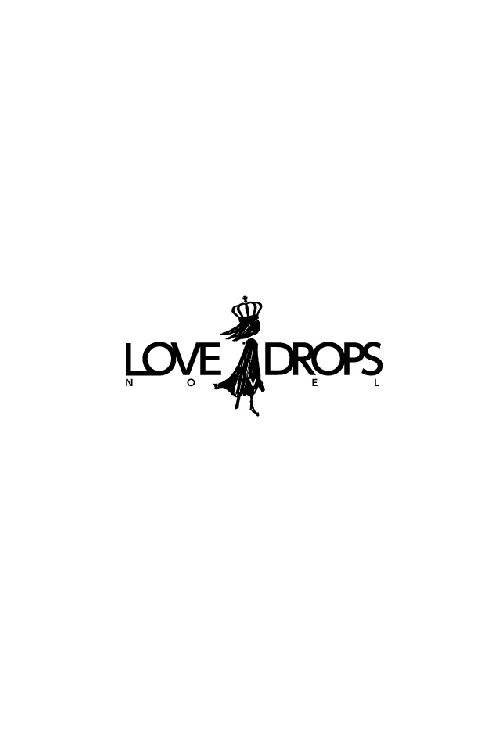

| 丸ノ内さんははじめてを捨てたい (らぶドロップス) | |
| ひより | |
| 株式会社 パブリッシングリンク (2017) | |

丸ノ内さんははじめてを捨てたい
ひより
０
友人からのメールで自分の誕生日を思い出す。
『志保、誕生日おめでとう！ 一足先にアラサーになった気分はどう？（笑） 最近全然遊べてないから、今度晩御飯でも一緒に食べよう！ 誕生日プレゼント代わりにおごるよー！ 食べたいものなんでも言ってね！』
──アラサー。
丸ノ内志保、今日から二十六歳。友人が言うにはアラサーらしい。
「いや、まだはやいでしょ」
スマホに向かって独りごちる。アラサーだのアラフォーだのなんだかんだと一番しつこく口にするのは、周りではなく自分の年齢に固執している当人だ、ということが割と多い。私、もうアラサーなの。そんなふうに自虐ネタを予防線のようにはって他人に歳の話は踏み込ませまいとする。
メールをくれた相手は高校の同級生で、大学が別々になっても頻繁に連絡をくれる面倒見のいい姉御肌気質ではあるのだが、いささか「女」を主張しすぎるきらいがあった。彼女にとって年齢は大事な問題であり、四捨五入して三十になる二十六歳という年齢は、どうやらアラサーにカテゴライズされるようだ。
「なにか言った？」
背後からの声に、はっと我に返る。
振り向いた先には、同じバイト仲間の四ツ谷くんが立っていた。百八十七センチの長身をなぜかコンプレックスに思っているらしく、彼はいつだって猫背気味だ。丸ノ内さんがいきなり足を止めたのを怪訝そうに彼女の後ろで小首を傾げている。
事務所の出入り口は狭い。前を歩いていた丸ノ内さんが足を止めてしまったら、後ろにいる四ツ谷くんも必然的に足を止めざるを得なくなる。
四ツ谷くんはふわふわとくせのある黒髪の、長すぎる前髪を持つ男の子だ。適当に羽織ってきただけと言わんばかりのダウンジャケット姿を見れば、彼が自分の見た目に頓着していないのは明確だが、不思議なことにそこまで相手を不快にさせる印象はない。元の素材がいいからなのかもしれないが、丸ノ内さんは四ツ谷くんをはじめとする男性の容姿にはさほど興味がなかった。──だって世の中には、生身の男よりもよっぽどイイものがあるんだから。
四ツ谷くんがもう一度、口を開く。
「丸ノ内さん。今、なにか言った？」
「なんでもない。急に止まってごめん」
四ツ谷くんとはバイトに入った時期も同じで、年齢も同じなので、なんとなくごく当たり前のように、ため口で話すようになっていた。
スマホを鞄に放り込んで、事務所を出る。朝九時十分のコンビニエンスストア店内は、通勤通学のラッシュを終えてようやく人心地つける状態になっていた。早朝シフトの自分たちと入れ替わったパートさんたちに挨拶をして、四ツ谷くんと「お疲れ」と言葉を交わし、別々の帰途につく。
朝の冬風が吹き付けてきて、丸ノ内さんはぶるっと身震いしてから、ぐるぐる巻きにしたマフラーに顔をうずめた。あまり手入れのいらないショートカットに、眉毛だけ描いてあわてて家を出たほぼすっぴん状態の顔。おまけに徹夜明けなので目の下にはうっすらとクマが浮いている。学生時代から使い続けている丈の短いダッフルコートに、膝の出たデニム、スニーカー。自分の身なりに気を配っていないことに対しては、四ツ谷くんのことなど言えた義理ではない。
（本気でさっぱり忘れてたなぁ、自分の誕生日......）
コンビニを出てしばらく歩き、自宅アパートにたどり着く。貫徹したので眠いのだが、いざ帰ったとしても寝るわけにはいかなかった。大きなあくびをしながら郵便受けを開けて中をチェックし、必要なものとそうでないものをよりわけつつ二階への階段をあがる。
「......うん？」
異様に素材のいい封筒に銀の蝋が押された手紙を手にして、丸ノ内さんは一瞬だけ動きを止めた。表には達筆な文字で丸ノ内さんの宛名が書かれ、差出人のほうは、男と女の名前で連名だ。
「あっ」
女の名前は高校時代の友人だった。最近は疎遠だが、当時は随分仲良くしていた。
そんな昔の友人が、なぜ連名で手紙を？ と思いながら部屋の鍵を開けて靴を脱ぎ捨て、しめきったカーテンを開けないまま封を切る。
中を見て、ついつい大きな声を出してしまった。
「真綾、結婚するんだ！」
それは結婚式の招待状だった。出欠確認用のハガキが同封されている。
「うわあ。結婚式なんて呼ばれたの、生まれてはじめて......」
女には人生で何度か「友人知人の結婚式ラッシュ」というものがあるらしいことは聞いていた。ああ、いよいよこれが第一次ラッシュのはじまりなのだろうか。一回につき三万円のご祝儀は痛いなあ......、と微妙な気持ちを抱きつつ、それでもやはり友人の朗報は嬉しかった。
（真綾、昔からお嫁さんになるのが夢だって言ってたもんね。夢がかなってよかったなー）
──しかしいつまでも、喜びの感情にばかりひたってはいられない。
丸ノ内さんはやはりカーテンを開けないまま、電気をつけてさっさとパソコン画面前に着席した。日光は時折、徹夜明けの人間の眼球には眩しすぎて痛いことがある。
丸ノ内さんの住まいは、築十五年のワンルームアパートだった。生活に必要な電化製品のほかにあるものといえば、大きな本棚、ずらりと並んだコミックスに他諸々、鉄パイプの安っぽいシングルベッドと、それに不釣り合いなほど座り心地のいい椅子。そして大きな机の上に──どんと立派な液晶タブレットが置かれている。
パソコンの電源を入れた丸ノ内さんは、慣れた仕草で画像編集ソフトを開く。ファイルを呼び出し、バイトに出る直前まで作業していたデータの続きを進めるためペンタブレットを握った。
画面上に映し出されていたのは、男と男が絡み合う濡れ場を描いた漫画だった。昨今爆発的な人気を博した漫画の二次創作作品で、ダークヒーロー的な黒髪のドＳキャラが、気の弱い優男風のサブキャラに組み敷かれ、淫らに凌辱される様がねっとりと描かれている。
（印刷会社はムーンブックスさん予約して......特急セット使えば間に合うはず。でもできれば普通のセットで入稿したいんだよね、オプションも付けたいし、予算的に）
眠気に半ば朦朧としながら、それでも「ウィリアム少佐（モブキャラ）にめちゃくちゃにされるコンスタンティン軍曹......ふふ」と薄暗い微笑を浮かべながら体力と気力を振り絞ってボードの上にペンタブを走らせる。
丸ノ内さんは腐女子である。腐女子とは、男性同士の恋愛、性行為等に心躍らせてしまう女性のことを指す。男性同士の恋愛、または性行為等を主題とした作品はボーイズラブ、通称ＢＬと呼ばれており、ときにＪＵＮＥ、薔薇などと呼ばれることもあるが、この場合は横に置いておく。とにかくそういった創作物に己の情熱をぶつけ、同人誌として製本し、即売会で売りに出す──丸ノ内さんはいわゆる、同人作家と呼ばれる存在だった。
（結婚なんてしたら、ホモが描けなくなっちゃうかもしれないのに、真綾ってすごいなー。あ、でもあの子は腐じゃなかったから、そこまでイベントに予定を振り回されることもないのかな？）
丸ノ内さんにとっては、生身の男より凌辱されるコンスタンティン軍曹のほうがよほど大切だった。誕生日もアラサーもどうでもいい。大事なのは目先の締め切りと凌辱されるコンスタンティン軍曹、ただそれだけなのである。
１
「やっぱ真綾に先越されちゃったねー。でもあの子、昔から恋愛体質だったし別に意外でもなんでもないけど」
誕生日おめでとう、のメールをくれた友人は、結婚式の招待状をくれた友人、真綾と共通の友人だった。彼女のもとにも真綾から結婚式の招待状は届いていたようで、ワインをぐいっとあおりながら、どこか未練がましい口調で言う。
おごるよ、の言葉に甘えてまんまとイタリアンのコース料理をおごってもらっている相手の名は、日比谷美輝。髪色こそ控えめだが派手な巻き毛で、目元のアイラインもマスカラもばっちり、手入れの行き届いたピンクベージュネイルを光らせている典型的なコンサバスタイルだ。
彼女もまた高校時代の同級生で、当時はよく真綾と美輝と丸ノ内さんの三人で親しくしていたものだ。些細なことでも笑い合ってはしゃいでいた。箸が転がってもおもしろいお年頃というやつだった。
しかしそんな時代も今は昔。美輝は現在、霞ヶ関にあるナントカカントカという会社でどうたらこうたらを管理するキャリアウーマンとなっていた。同時に「女」磨きに余念のない、一回の美容院に三万も四万もかける猛者でもある。
大学を卒業してこのかた、ずっと同人作家としてギリギリの生計を立ててきた丸ノ内さんは、世情に疎い。はまる創作物はだいたいがファンタジーや学園モノだったし、確定申告に四苦八苦させられるほかは、社会と触れ合う機会が極端に少なかった。あるとすれば早朝のコンビニバイトくらいが関の山で、美輝からこんな仕事をしているんだよと聞かされてもちっともピンとこず、よって何度説明を受けても彼女の仕事がどう世間の役にたっているのかよくわかっていなかった。とりあえず霞ヶ関で働いているならとてもすごい仕事なんだろうな、程度の認識しかない。
「でもね、あたし、ちょっと心配な話聞いて」
丸ノ内さんが遠慮なくもりもり料理を平らげていると、向かい合って座っていた美輝が声を潜めて身を乗り出した。
「なにが？」
「真綾から前にね、彼氏......これから旦那になる相手の話を聞いたことがあるの。付き合ってるときに、真綾、彼の家に遊びに行ったことがあったんだって。でね、そこで相手......五時間コトコトビーフシチューを煮込んでたっていうの」
「ふーん」
「ふーん、じゃないよ。大事件でしょ！」
テロもかくやという勢いの美輝の言葉に、丸ノ内さんはきょとんとした。
「圧力鍋がなかったんなら、しょうがないんじゃない？ 五時間くらい煮込まないと肉がトロトロにならなかったのかもしれないし」
「そうじゃなくて！」
美輝はまたさらに丸ノ内さんのほうへ顔を寄せる。
「それってつまりセックスせずに帰ったってことだよ！」
「あ、そういうことか」
「こないだから一緒に住みはじめてるみたいなんだけど、真綾に生理がきちゃったらしくてまだ一度もしてないんだって。ノーセックスで結婚に至るカップルがいるなんて、あたし、びっくりしちゃって」
「ははぁー」
そのネタいいなあ、プラトニックな結婚。いただきだ。内心でメモをとりつつも、でもセックスしないんだったらＲ指定の本にはできないなあ、などと策をめぐらす。
そんな丸ノ内さんの反応の薄さに辟易したのか、美輝がなんともいえない表情を作った。
「......あのさあ、志保」
「はい？」
「前から聞こうと思ってたんだけど......」
美輝が瞳をすがめる。
「あんた、いつから彼氏いないの？」
「えっ」
「高校時代はさ、女子高だったから仕方ないとは思うよ。あたしも真綾も処女のまま卒業したし。でもさすがにあんただって、この歳までなにもないってことはないでしょ？」
「えーと、それは......」
「今、彼氏、いないでしょ？」
断定するように言われ、一瞬だけ言葉に詰まった後、丸ノ内さんはうなだれた。
「はい、いません」
「いつからいないの？」
「えー、あー......」
──生まれたときから今日に至るまで、彼氏などいたことはございません。
「まさか、さ」
美輝の笑顔が若干引きつる。
「高校出た後......、『なんにもない』、なんてことは、ない、よね？ この歳まで清らかな乙女のまま、とか、そんなことないよね......？」
気遣うように言われて返答に窮した。まさしく彼女の言葉通り、丸ノ内さんは『なんにもなく』清らかな乙女のまま今日まで生きてきたわけだが......それはそんなに悪いことなのだろうか？
丸ノ内さんが笑ってごまかしたのを見て、美輝は机を叩いた。
「それはまずいよ、志保！」
反射的に丸ノ内さんの背筋が伸びる。
「な、なにが？」
「今度結婚する真綾はいくつ？」
「二十六です」
「彼氏不在のまま処女疑惑を否定しない丸ノ内志保はいくつ？」
「に、二十六です......」
「いいの？ あんたの人生、本当にそれでいいの？」
「だ、だって」
ここにきてようやく、丸ノ内さんは反撃に出た。
「だって私の生活じゃ出会いなんてないし。そもそも生活成り立たせるためにはホモだけあればいいわけだし。ていうか私は男じゃなくてホモを愛してるんだし。それに私は美輝ほど年齢云々なんて気にしてないし」
「あんたがホモ好きなのは昔からだから今更なにも言わないけど、でも、あんたは二次元の人物なんじゃなくてれっきとした三次元の女なんだからね。いい？ これから先、どんどん顔に消えないシミシワができていくんだよ。乳首だって黒ずんで色が変わってきちゃうんだから。もうすでに下降線なんだよ、私たちの『女』は。紙で指切ったら治るのが遅くなったと思わない？ そういうことなんだよ！」
「た、たしかに怪我の治りは遅いけど......！」
「ぼろぼろのよれよれになりながら、このまま男に触ってもらえず、一生処女のままでいいの？ 今を逃したらあんたはただばーさんになっていくだけなんだよ？」
「み、美輝は全国のオーバー二十六に謝ったほうがいいと思う。それに最近『やらみそ』の人も意外と多いってテレビでやってたよ。そんな漫画やドラマも大ヒット御礼だし、だから私もその仲間に入れてもらうつもりで生きていく──」
「負け惜しみを言うな！」
一喝されて縮こまる。負け惜しみではなく本心だったが、昔からなにかと面倒を見てもらっている美輝には、なんだかんだ言いつつも頭があがらないのだった。
「志保。今度の週末、合コンするよ。あんた、ぱっと見そんなオタクに見えないんだから、なるべく小きれいな恰好してくるんだよ。ちょうどいいの取り揃えておくから！」
「え、えぇー......」
「返事はハイ！ ノーはなし！」
「む、無理だよ。だって私、合コンなんて行ったことないんだよ」
「なにごともはじめの一歩は大事でしょ？ 日時と場所が決まったらメールするから、なにがなんでも絶対来るんだよ！」
「ええぇー！」
「返事はハイ！ ノーはなし！」
（美輝はそういうの、気にしすぎなんだよ！ 誕生日にアラサーだとかなんとかメールしてきたのも美輝だし。そういうハングリー精神があったからこそ立派な会社に就職できたのかもしれないけどさー......）
などと内心ぶちぶち言いつつ、「この歳まで乙女」という美輝の遠回しな言葉が、妙に耳に残っていることが、どうしても腑に落ちない丸ノ内さんである。
なんだかすっきりとしない誕生祝いだったので、帰宅して早々、丸ノ内さんはスカイプにあがった。オンライン状態になっている幾人かの同人仲間を見つけ、手当たり次第に声をかける。
『今日、友達にマウンティングされたー！ ごはんおごってもらったからいいんだけど、彼氏がいないことで虐げられましたー！』
オタクは携帯で連絡を取るよりもパソコンで連絡を取るほうがよほどつかまりやすい。案の定、このときも丸ノ内さんのもとに次々とメッセージが返ってきた。
『あるある！ こっちは別れたばっかで傷心だっっつーのに......』
（えっ？）
『マウンティングさせたい奴はさせとけや......。どうせソイツも独身だろー。リアルな嫁姑問題がマジで笑いごとじゃすまないか知らんのや』
（え......えっ？）
『ホモに理解のない彼氏と付き合うことのほうがマウンティングよりよっぽどつらたんでござる』
（ええぇっ？）
どの面子もみな、これまで男の片鱗さえ見せなかった人々だ。それなのにメッセージから推測するには、──ひとりは彼氏と別れたばかりで、もうひとりは既婚者、最後のひとりは現在進行形でつらたんな彼氏がいる......ということになる。丸ノ内さんは驚いていた。だって、私、みんな処女だと思ってたのに。
──もうすでに下降線なんだよ、私たちの『女』は。
──ぼろぼろのよれよれになりながら、このまま男に触ってもらえず、一生処女のままでいいの？
（もしかして、私......）
液晶画面の前でかたまる。
（この歳で処女って......やばいの？）
２
やばいような気もするし、やばくないような気もする。人の判断基準は個人の価値観によりけりだ。ここまで処女を持ちこして生きてきたのなら、いっそ結婚するまで処女のほうがいいのではないかと思えなくもない。ただ、丸ノ内さんに至っては結婚の予定がないことが問題なのだが。
（まあ、いいや。私が処女だろうと処女じゃなかろうと、ホモの世界には関係ないし）
などと、マウスでかちかちと pixiv のページをクリックしながら物思う。
（そうだ。真綾の結婚式......、えっと、参加ハガキは何日までに返せばいいんだっけ）
美輝とは比較的よく会うが、引っ込み思案な真綾とは、ここ一年、二年、顔を合わせていなかった。それでも招待状を送ってくれるのだから、律儀な子なのだと思う。
（昔は楽しかったなー。私と美輝と真綾と三人で漫研入って、会誌の締め切りとかあったけど、コピ本だったから今みたいに切羽詰まってなかったし、アナログ時代だったからみんなでアシし合ってトーン貼ってベタ塗ってホワイトして......）
比較的派手めなことが好きな美輝と、清楚でお嬢様然とした真綾と、興味のないことにはとことん無頓着な丸ノ内さんの三人は、どう見ても不自然な組み合わせなのに、誰もがびっくりするほど仲良しだった。
仲良くなったきっかけは、漫画研究部で一緒になったからだ。漫研時代、偶然クラスが一緒だったことも手伝って、三人はいつも行動を共にしていた。
丸ノ内さんと真綾は漫画を描いてみたいから、という理由で漫研に入部したのだが、美輝はただ少女漫画を読むのが好きだから、という理由で入部した。入部当初、初心者だった丸ノ内さんと真綾は卒業するまでにそれなりに上達することができたのだが、美輝は結局最後まで、ベタ塗りしかできずに終わっていた。高校の緩い部活だから、そういったことも許容されていた。本当に楽しかった。青春だ。
（そういえば真綾って今、漫画とか描いてるのかな。美術系の大学に入って......卒業後は留学したみたいな話を聞いたような気がするけど......）
卒業後、数年は仕切り屋の美輝が「集まるよ！」と招集をかけることによって、大学がばらばらになっても顔を合わせてはいた。が、美輝が仕事で忙しくなってからはほとんど三人で連絡を取り合うこともなくなっていた。
（そんな私のことも忘れずにいてくれたなんて、真綾ってやっぱりいい子だなあ......）
と、そこまで考えてはっとした。
（でも私、結婚式に着て行くような服なんて持ってないや......）
あれってなんか、色々マナーとかあったはずだよね......。ご祝儀の袋を包む風呂敷みたいなやつ、なんだっけ名前......。などとぼんやり考えつつ、マウスをクリックし続けていると。
「あれ？」
いつの間にか pixiv のマイページにメッセージが届いていた。
差出人は、知らない人だ。丸ノ内さんは定期的に同人誌を出して販売している同人作家なので、マイページにたんまりと、あふれんばかりの愛を注いだＢＬ漫画（※ただし発売には至らない下描きレベルのもの）を掲載している。
（感想、かな......？）
なぜか妙な予感にとらわれてしまったのは、相手のハンドルネームが「名無し」だったからだ。いかにも即席でアカウントを用意したような感じがする。おまけにメッセージの件名も「無し」。嫌な予感が増長してゆく。
びくびくしながら、丸ノ内さんはメールを開いた。
『マル様』
意外とまともな書きだしだった。ちなみにマルとは丸ノ内さんのハンドルネームだ。
『漫画、拝読しました。わたしも「コンスタンティン軍曹の憂鬱」は好きなので、原作はもちろん、pixiv や同人誌なんかで漫画やイラストを楽しんでいます』
（あ、割と普通......？）
ほっと肩から力を抜いた丸ノ内さんは、しかし次に視界に飛び込んできた文面に言葉を失った。
『マルさんの漫画は、とても絵がきれいだけど、男性器やセックス描写にまったくリアリティがありません』
「────」
『マルさんはもしかして処女ですか？ こういう漫画を公開されることで、原作が侮辱されるようでとても不愉快な気持ちになります。お願いですから、どうか今すぐに漫画を撤去して、アカウントを削除してください』
丸ノ内さんはかたまった。
かたまったまましばらく動けなかった。
ややあってからじわじわと体が熱くなってくる。それが怒りによるものなのか、悲しみによるものなのかはわからない。ただ、核心を突かれたのは痛かった。
──もしかして処女ですか？
（そ、そうです、処女です......。どうしてわかったんですか......？）
体がぷるぷると震えてきた。
（私が処女かどうかって、ホモ漫画だけでもバレちゃうものなの？ 世界の男性器大全とか読んでもダメなものなの？ 私は今まで......『私は処女です！』って言ってるような漫画を同人誌にして何百部も販売してたの......？）
丸ノ内さんはよろよろとパソコン画面の前から離れた。そのままベッドへ這いずっていき、投げ出したスマホを引っ張り出して、美輝宛てにメールを打つ。
『合コン、行きます。彼氏作り、頑張らせてください......』
「おはよぉー......」
「あ、おはよう」
早朝五時五十分、コンビニの事務室。室内にあるのは店長とオーナーが使うコンピューターの鎮座した事務用机が各一台ずつのみなので、バイトやパートは折り畳み式のパイプ椅子を引っ張り出して休憩をとる。
まだまだ暗い冬の夜明け前、出勤してきた丸ノ内さんは、先にもそもそと制服に着替えていたバイト仲間の四ツ谷くんに対して、死にそうな声で挨拶をする。
「今日も、寒い、ねぇー......」
「どうしたの、丸ノ内さん。元気ないね」
「いや実はさ、しょ......」
処女こじらせて困ってるんだよね、と、言いそうになって、寸でのところで思いとどまる。
「しょ、招待状が届いてね。友達の、結婚式の」
「へえ、おめでとう」
「うん、おめでたいはおめでたいんだけど......。私、パーティドレスとか持ってないんだよね」
「あ、そうなんだ。結婚式ははじめて？」
「そうなの」
「ああいうのって普段、着ないもんね」
「あれってスーツとかで行っちゃダメなのかな。って言っても私、リクルートスーツしか持ってないんだけど」
「たしかスーツはダメなんだよ、スタッフさんと間違われるかもしれないし。あと女の人は、黒いタイツもあんまりよくないって聞いたけど......」
「はー、面倒くさいなあ」
深いため息をつきながら遠い目をしつつ、コートを脱いでロッカーに押し込んでいると──横から舐めるような視線を感じた。見れば四ツ谷くんがじいっと食い入るようにして、丸ノ内さんの全身を眺めている。
丸ノ内さんは眉をひそめた。
「なに？」
よほど疑わしげな顔をしてしまったのか、四ツ谷くんはわたわたと着替え途中だった制服のチャックをあげた。
「あ、いや、なんでも。えっと......、先、行ってるから」
「う、うん......」
事務所から出るときも、四ツ谷くんは丸ノ内さんをちらりと見てから去っていった。色恋の含みは微塵も感じられない、かといって悪意があるようでもない、不思議なまなざしだった。
（な......）
丸ノ内さんは小首を傾げる。
（なんだ......？）
その日、バイトの間中、四ツ谷くんは丸ノ内さんを見ていた。まるで体の線をなぞるようにじろじろと、頭の先からつま先までじっくりと眺められる。
気味が悪い、とは思わなかった。四ツ谷くんの視線に、変な下心があるようには見えなかったからだ。ただただ怪訝に思った。そしてはっとひらめいた。
（──まさか私が処女だってバレた？）
などとあり得ない冷や汗をかく。もしかして処女には、独特の処女臭が出ているのかもしれない......それがあんなアンチをわかせてしまった原因なのかも......。
（そういえば四ツ谷くんってなにしてる人なんだっけ。自営みたいな仕事って言ってた気がするけど、確定申告仲間なのかな。あんまりオタって感じじゃないから、畑違いの自営なんだろうけど......）
四ツ谷くんは、全体的にすべてがふんわりとした男の子だ。話しかければきっちり答えてくれるし、気遣い上手なのだけれど、いつも心ここにあらずな印象を受ける。それなのに沈黙が続いても別に苦にならならず、仕事でもケアレスミスのようなことは絶対にしない。草食系男子を絵に描いたような男の子、それが四ツ谷くんだ。
（四ツ谷くんはどうやって童貞を捨てたのかなあ......）
あの妙に影が薄いところを見ると、性欲もまた薄いのかもしれない。そもそも彼はどうしてコンビニで早朝バイトなんかをしているのだろう。丸ノ内さんと同じように、主収入だけでは生活費が足りないからだろうか。
（男の子はいいよなあ）
だって男の子には風俗がある。高いお金を払えば高級な風俗店で童貞を捨てられる。きれいなお姉さんに優しく導いてもらえる。女にもお金を払えば、コンスタンティン軍曹みたいな男の人に処女を奪ってもらえるサービスがあればいいのに。......あ、いや、待てよ。次のネタはコンスタンティン軍曹が男娼にされるパラレル設定でもいいかもしれない......。
あれやこれやと妄想を膨らませていたら、レジで怒声が聞こえた。大急ぎで駆けつけると、夜勤明けの土方のおじさんのような人に、
「いつまで待たせんだよ、ちゃんと働けよ！」
と、叱られてしまった。
隣のレジでは行列を前に、四ツ谷くんが四苦八苦しながら客をさばいているところだった。
「も、申し訳ございません！ 二番目にお待ちのかた、こちらのレジへどうぞ！」
仕事のミスを反省しつつも、丸ノ内さんの胸の中には、『もしかして処女ですか？』という言葉が、いやな含みを伴って反響し続けた。
３
「貴様は、馬鹿かっ！」
美輝に肩を掴まれてがくがくと揺さぶられた。
「なぜ合コンにパンツルックで来る！ アホかっ！ トンマかっ！」
「だって寒かったし......あと私スカートって持ってないし......」
「買え！ いくら家仕事でもその季節の一張羅としてワンセットくらい用意しておけっ！」
夜の恵比寿駅西口ロータリー前。オーナメントの輝く街の一角で、ああ、恵比寿に行くくらいなら池袋に行きたい、と思いながら、丸ノ内さんは余所行き用（当社比）のＰコートにタータンチェックのパンツスタイルで立っていた。自分なりに精いっぱいめかし込んできたつもりだったのだが、美輝に言わせると馬鹿でアホでトンマらしい。
美輝は深いため息をつきながら、諦めたように丸ノ内さんを連れて夜の街を歩きだした。かつかつとヒールの踵の音を響かせながら先を歩く彼女の背中に向けて、丸ノ内さんは問いかける。
「ところで合コンって何人でやるの？ 真綾も来るの？」
「このステテコ。結婚控えた人を呼ぶわけないでしょ、にーにーだよ」
「にーにー？」
「二対二ってこと。女はあたしとあんただけで、男は友達の友達だから、好き放題酔っぱらってぞんぶんにお持ち帰られなさい」
「えっ。お持ち帰りって私、都市伝説かと思ってた。それかホモの世界の中の専売特許かと......」
「そんなこといったら少女漫画とかどーすんの、あっちの世界にだってお持ち帰りはあるでしょ！ ......ああ、もう。志保はとにかくにこにこして黙ってるんだよ。わかった？」
「なんだそれー」
言いつつも次第に緊張してきた。お持ち帰り云々はともかく、男の人と新しく知り合うのは久しぶりだなあ、と考えると自然と鼓動がはやった。
美輝はロータリーから入り組んだ先にあるおしゃれな居酒屋へと丸ノ内さんを連れていってくれた。全席個室の居酒屋らしく、男性陣は先に入って待っているそうだ。
入店するなり黒いシャツ、黒いエプロンに身を包んだ店員に名を聞かれ、慣れた様子で美輝がそれに答える。店内は静かで、バーのようなムーディな紫色の灯りに包まれていた。
美輝はとにかくにこにこしていればいいと言ってはいたが、さすがに自己紹介くらいはしなくてはならないだろう。いったいなんと言えばいいのだろうか。どうすれば自分は処女を捨てられるくらいに、相手に気に入ってもらえるだろうか。次第に緊張が高まってゆく。
「こんばんはー、日比谷です。先日はどうもぉ。お待たせしてしまってすみませんー」
案内された個室に美輝が入っていったため、続いて丸ノ内さんも室内へと足を踏み入れる。
座敷席の向こう側で、スーツ姿の男の人がふたり座っていた。片方は顎髭をおしゃれにはやしており、もうひとりは黒ぶち眼鏡がインテリらしく様になっている。イケメンだ、と思った。男に興味のない丸ノ内さんでもひとめでわかるほどのイケメンがふたり、並んでいた。
そんなイケメンたちの視線が、美輝へと注がれ、次いで丸ノ内さんへとうつる。途端に、ふたりの顔色がさっと変わった。
『ないな』
『うん』
......ひげが攻めと見せかけて、眼鏡が攻め。
（今日はこの妄想でいく、うん）
その日の合コンは美輝ばかりが話しかけられていた。丸ノ内さんはホモな妄想を繰り広げながら、どうにかして予約した二時間を過ごさなくてはならなかった。
「悪かった。今日のはひどかったわ。ごめん」
帰り際、美輝に謝られた。
「あんなにデリカシーがないとは思わなかった。あれはないわ。あの人たちが言ってたことは気にしないで、気持ち切り替えて次行こう。今回のは、まあ、残念な例の勉強だと思ってくれると助かる。......でも本当にごめん」
美輝が心底申し訳なさそうに頭を下げたので、丸ノ内さんは困ったようにくしゃっと笑うことしかできなかった。
「美輝は悪くないよ」
ああ、これはハズレだな。相手の心の声が透けて見えるような顔を見ることができただけ、勉強にはなった。
──もしかして処女ですか？
（......そうです。処女で、しかも合コンでは男の人にガン無視されちゃうようなハズレ女です......）
よくないことが続くときは続く。きっとそういうものなのだ。
＊＊
（だいたい私、彼氏がほしいわけじゃないんだし）
丸ノ内さんは敗者の帰途の夜道を歩きながら、胸の中でぶちぶち思った。自分なりに自分を励ましているつもりだった。
（要は、処女を捨てたいだけなわけだし。だったら別に、相手は出会い系だってなんだって──）
そこまで思って、しゅんとうなだれた。
（いや、......出会い系は、やっぱりダメ......。病気とかこわいし、まして妊娠とかもっとこわいし......。出会い系で出会ってその相手と恋に落ちるコンスタンティン軍曹の現代パロのネームならきれそうだけど......）
ああ、世の中の女の人って、いったいどうやって処女を喪失してるんだろう。そんなことを考えながら、丸ノ内さんは曇って月の見えない夜空をあおいだ。
＊＊
気にしないように努めてみたが、どうやらあの合コンは、比較的タフな丸ノ内さんにも結構なダメージを与えてくれていたようである。その日の晩は中々寝付けなかったし、薄い本（同人誌の意）を読もうとも思えなかった。インターネットで「合コン」「ハズレ女」などというネガティブなワードを検索して、鬱々とした気持ちになる。眠れぬままに朝を迎え、いつもよりはやくバイトに向かった。普段なら面倒だと思うバイトなのに、外に出て気分転換できることが嬉しかった。
「おはよぉー......」
死にそうな声で挨拶をしながら早朝のコンビニに入る。そこにはすでに制服に着替えた四ツ谷くんが一足先に床のモップ掛けをしていた。
四ツ谷くんは丸ノ内さんの顔を見るなりぎょっとした表情を作った。
「どうしたの、丸ノ内さん。死相が出てるよ」
「いや、ただ寝てないだけ......。ごめん、バイトはちゃんと頑張るから」
「大丈夫？ 具合が悪いなら休んだほうがいいんじゃない......？」
「具合が悪いわけじゃないの。心配してくれてありがとおー」
ふらふらしながら事務所に入っていこうとしたとき、またしても視線を感じた。振り返ると四ツ谷くんが、自分を見ている。
（まただ）
昨日も四ツ谷くんから、じろじろと見られていたことを思い出す。丸ノ内さんは思い切って踵を返し、四ツ谷くんのもとへと戻っていった。大丈夫、仕事をはじめなくてはならない時間まではまだあと十五分ある。
丸ノ内さんにずいずい迫られた四ツ谷くんは、驚いたようにモップを手にしたまま硬直していた。
「四ツ谷くん、さ」
別に怒っていたわけではないので、なるべく冷静な声で丸ノ内さんは問いかける。
「なんかこないだから私のこと見るよね。もしかして私の自意識過剰かな」
「あっ、いや......」
四ツ谷くんは露骨にあわてていた。なにか言おうとして口を開いたあげく、ぱくぱくして黙り込む。根気強く丸ノ内さんが返答を待っていると、ようやく絞り出すようにしてつぶやいた。
「俺、......かもしれない」
「え？」
「丸ノ内さん、前に友達の結婚式に着ていく服がないって言ってたよね」
（ああ、そういえばそんなことも......）
失敗した合コンや、自身が処女であることにとらわれすぎていて、すっかり忘れてしまっていたが、真綾の結婚式の招待状にはきちんと参加にマルを付けて返していた。
「丸ノ内さんくらいの背の女の子の服だったら、俺、作れるかもしれない」
「──え？」
「もし丸ノ内さんが、よかったら」
四ツ谷くんは叱られるのを恐れている子どものように、顎を引き上目づかいになりながらおずおずと丸ノ内さんを見た。上背があるためか、その姿はやはり、大型犬のようにしか見えない。
「俺に丸ノ内さんのパーティドレス、作らせてくれない？」
４
聞けば四ツ谷くんは服飾の専門学校を卒業しているのだという。
「昔から、こう、ちまちま布を切ったり縫ったりするのが好きで」
夜が明け、パートさんとシフトを交代した帰り道。朝日がさんさんと降り注ぐ中、栄養ドリンクをすすりながら丸ノ内さんは四ツ谷くんと並んで歩く。
「特に女の子の服を作るのが楽しかったんだよね。でも俺、女装とかそういうのは興味ないから、自分で着るわけにはいかなくて、妹とかに着せてたんだけど」
「へえ......」
「でもあんまり着てくれる人がいない服を作るのも不毛だなって思って、今は専ら自分で作った小物を作って売って暮らしてるんだ」
「そうだったんだあ」
向かう先は四ツ谷くんの暮らすマンションだった。同じコンビニに勤めているだけあって、徒歩圏で通える場所に住んでいるという点は彼も丸ノ内さんと同じようだ。
そこでふと、自分ばかり多く喋っていることに気が付いたのか、四ツ谷くんはあわてたように丸ノ内さんへ話題をふってきた。
「丸ノ内さんは、たしか漫画家なんだっけ。前にほかのバイトの子が話してた気が......」
「違うよー」
丸ノ内さんはけらけらと笑った。
「私はね、同人作家なの。だから漫画家なんて立派なものじゃないんだよ」
「ふぅん......。どう違うの？」
「うーん、漫画家はオリジナルの作品を商業誌で発表していく人たちで、同人作家はその漫画の二次創作......パロディを描いて即売会とかで手売りで販売する人たちって感じかなあ。......小物とか作るんなら、四ツ谷くん、デザインフェスタとかわかる？」
「ああ。知ってるよ、デザフェス。俺も今度出るんだ。たしかもうすぐだよね」
「そうそう！ 私のはね、あれの同人誌バージョンみたいなもの。ほら、スパコミとかコミケとか聞いたことない？」
「聞いたことある。そっか、丸ノ内さんはそういうことしてたんだ。なら今度なにか絵、見せてよ」
「いやいや。私の専門はホモだから、四ツ谷くんには楽しめないと思うよ」
「えっ」
一瞬だけ四ツ谷くんの動きが静止する。微妙な空気がふたりの間に流れた。
「ホ......ホモ？」
「そう。ＢＬ。あれ......コミケは知っててもＢＬは知らない、かな......？」
「あ......聞いたことある。そっか、丸ノ内さんは、ＢＬが好きなんだね......」
若干引きつった笑顔で、四ツ谷くんは弱々しく続けた。
「い、いいよね、好きなことがあるって」
（生身の男にホモの話はアレだったか......）
ＢＬ好きとばかり交流していたため忘れていたが、こういう世間の正しい反応を目の当たりにすると我に返って反省する。いかん、いかん。オタク文化は認められる範囲内でやらなくては、世の中から冷たい視線を受けてしまう。気を付けねば。
しかし笑顔を引きつらせつつもしっかりフォローを入れてくれる四ツ谷くんは、昨日の合コン男子たちよりよっぽどいい人だとしみじみ実感する。
（やっぱり人はみんな違ってみんないいわけだし、私もこのまま『やらみそ』目指してしまっても別にいいんじゃないだろーか......）
などと考えながらたどり着いた四ツ谷くんの家は、バイト先のコンビニを挟んで丸ノ内さんのアパートとは反対の、商店街を抜けた先にあるオートロックのマンションだった。北向きだけど角部屋で西日がひどいから家賃はすごく安いんだよ、と懐事情まで教えてくれた。
今日はこれから、四ツ谷くんにドレス用の採寸をしてもらうことになっていた。
「やー、ほんと助かる」
オートロックをくぐり、エレベーターに乗りながら、丸ノ内さんは臓腑さえ吐き出しそうな深いため息をついた。
「結婚式用の服、本当にどうしたらいいかわかんなくて困ってたんだ。いざとなったら友達を頼ろうかなって思ってたんだけど、私、あんまりひらひらしたのって好きじゃなくて」
「そういえば丸ノ内さんって、いつもパンツルックだもんね。でもせっかくだから、式にはワンピースで行ったほうがいいと思うよ」
「そういうものなのかあ......。あれ、足の間からお腹にかけてスースーして落ち着かないんだよね」
ポーン、という軽やかな音とともに、エレベーターが止まる。階数は七階だった。
「じゃあ、あんまりガーリーな感じにしないで、大人っぽいイメージのもの、作ろうか。好きな色とかあったら教えて」
「特にないなあ。私、服とかあんまり興味なくて」
「そ、そう......。こ、困ったな......」
四ツ谷くんはエレベーターを出てコンクリートの廊下を歩き、奥から二番目の部屋の前で立ち止まった。鍵を取り出してドアを開く。すると、中からふわりとフローラルな香りが広がってきた。
「──わあっ」
扉を開けるとまっすぐに廊下が伸びていて、そこに洗濯機とキッチンが並び、その向かいにユニットバスという間取りは、丸ノ内さんの部屋と同じだった。どうやらワンルームというのはこれ以外に作りようがないのかもしれない。四ツ谷くんの部屋の場合は、廊下の奥にスモークガラスの扉があって、ぴったりと閉ざされていた。丸ノ内さんの部屋の場合、そこの扉は木製なので、そこらへんはすこし違うようだ。
──しかし丸ノ内さんは、玄関にあがった時点ですでに感動していた。
女子力イコールフリーザ様の戦闘力に近しいもの、アラサーイコール本人が気にしているだけのもの、なんて考えていた丸ノ内さんですら感動してしまうほど、四ツ谷くんの玄関はきれいに片づけられていた。のみならず飾られた小物に至るまで意匠が凝らされており、とにかく全体的にいい香りがする。玄関先に置かれているガラス瓶の中から飛び出た棒が、その香りの根源のようだった。
「すごい、きれいな玄関！ 入り口にアロマがあるってなにごと？ ねえ、四ツ谷くんってもしかしてオネエなの？」
「違うよ！ 俺、小物を売るから、変な匂い移りがしたらいけないと思って、それでアロマを......。ほら、こういうマンションって独特の匂いがあるじゃん」
「そう？ 私アパートだからわかんないなー。でもこれ、いい香りだね。四ツ谷くんの女子力、計測したらすごいことになりそう」
くんくんと鼻を動かす丸ノ内さんの背中を、四ツ谷くんが珍しく強い力でぐいぐいと押した。
「いいから、もう中に入って」
四ツ谷くんは、なぜか照れているようだった。アロマを褒められて照れたのか、それとも男の子に対して女子力なんて言ってしまったことに対して照れたのかはよくわからない。
「うわあ！」
スモークガラスで作られた扉を抜けてさらに驚いた。部屋の広さは丸ノ内さんの家とほぼ変わらないはずなのに、中にあるものが違いすぎたのだ。
そこは清涼感のある青い小物で統一された部屋だった。きちんとメイキングされたベッドに、ぴたりと閉ざされたタンス、その上に並ぶキルト小物──、そして部屋の中心に置かれたミシンと、そのずらりと並ぶ、同じデザインの小さなバッグ。
シンプルなベージュのコットン素材で作られた、持ち手が合皮のバッグだった。バッグと色違いの布で作られたコサージュと、ささやかなレースがとても良いアクセントになっている。
おしゃれに疎い丸ノ内さんでも、ひとめでかわいい！ と思ってしまうようなバッグが、ずらりと並んでいるのは壮観だった。
「これ、四ツ谷くんが作ったの？」
「あ、それは前回の受注分で......、今やってるのはこっちのバイカラーのバッグなんだ」
四ツ谷くんがベッドの裏から引きずり出してきたのは、薄いピンクと白のバッグだった。触り心地のいい布は、皮ではないようだったが固有名詞がわからない。とにかくただわかるのは、これは四、五千円で売っていてもおかしくないくらい立派なものだ、ということだけだ。
（す、す、す、すごすぎる！）
「すごいね、四ツ谷くん！」
興奮を抑えきれずに丸ノ内さんは正直な感想を四ツ谷くんにぶつけた。
「こんなに立派なものが手作りなんて信じられない！ 身近にこんなすごい人がいたなんて、知らなくて損した気分！」
「ま......丸ノ内さんは大袈裟だよ」
「そんなことないって！ 本当にすごいなあ......」
「俺くらいの人なんて、ほかにいくらでもいるよ」
「いないって！ 私も同人誌の表紙のカラーとかやるからわかるもん。これ、デザインも全部四ツ谷くんが作ったんでしょ？」
「う、うん。そうだけど」
「だったらなおさらすごすぎるよ！ バリエーション豊富すぎる」
「だ、だから丸ノ内さんは、大袈裟だってば......」
とうとう俯いてしまった四ツ谷くんは、顔を真っ赤に染めていた。その様子が微笑ましくて、丸ノ内さんはますます上機嫌になった。
「こんなの作れる人に服作ってもらえるなんて、私、ラッキーだなあ」
「あっ、そうだよ。寸法はからないと。今日はそのために来てもらったんだから」
はい、そこに立って。てきぱきと指示しつつも、四ツ谷くんの頬はまだ赤い。
（なるほど、これがかわいい系男子のリアルバージョンなんだ......。漫画以外ではじめて見ちゃった）
などと考えながらコートを脱いで、丸ノ内さんはラフなジーンズとトレーナー姿になる。そんな彼女を見て、四ツ谷くんは困ったように腕を組んだ。
「うーん......。下はいいんだけど、上がちょっと厚手だから......正確なサイズがはかれないかも......」
「あ、じゃあ脱ごうか？」
「そうしてもらえると助かるけど......下にインナー、なにか着てる？」
「うん、着てるよ。冬でもあったか発熱保温シャツ」
「えっ」
四ツ谷くんがぎょっと目を剥いた。
「だ、大丈夫？ それ......」
「なにが？」
「いや、丸ノ内さんがいいならいいんだけど......」
なにが大丈夫なのかさっぱりわからず、丸ノ内さんはトレーナーを脱ぎ捨てた。途端に、四ツ谷くんがびっくりしたように目を丸くして、ぐるりとこちらに背を向ける。
「ま、ま、ま、丸ノ内さん！」
「なに？」
「な、な、な、なんで下着つけてないのっ？」
「え？ パンツならちゃんとはいて......、あ」
ブラジャーをつけるのをすっかり忘れていた。夏場はさすがにそんなミスを犯すことはないのだが、冬は着るものが厚いため、合コンのショックを引きずっていたためか、うっかり忘れてしまっていたらしい。
さすがにこれには、丸ノ内さんも恥ずかしくなった。苦笑でごまかす。
「あはは。ごめん、ごめん。お見苦しいものを」
「い、い、い、いや......、お、俺はいいんだけど」
「でもこれならバストトップまで正確なサイズがはかれていいんじゃない？ はい、どーぞお願いします」
両手を横に広げて立ちはだかる丸ノ内さんを、おずおずと四ツ谷くんが振り返る。彼はなるべく胸元に視線を向けないようにしながら、側にあったメジャーを手に取った。
「じゃあ......、その、失礼して」
肩幅をはかられ、背中をはかられ、前から抱き付くようにして腕を回され、バストトップとアンダーをはかられた。四ツ谷くんは丸ノ内さんの胸先から目をそらしつつ、真摯にウエスト、ヒップのサイズもはかっていく。都度、スケッチブックのようなデザイン帳に、数字を書きこんでいった。
すべてのサイズをはかり終えるころ、四ツ谷くんは、頬どころではなく耳まで真っ赤になっていた。
（ん？）
ここに至って丸ノ内さんは、現在のこの奇妙な状況に気付く。
（なんかナチュラルに男の子の部屋に来ちゃったあげく、ノーブラでこの体勢って......もしかしておかしいこと？）
四ツ谷くんの手がわずかに震えていることに気が付いたとき──ふいにぽろりと、丸ノ内さんは思っていたことをそのまま口に出してしまった。
「四ツ谷くんって、童貞？」
「えっ」
「あっ」
相手の気持ちを配慮せずに失礼なことを言ってしまったと、丸ノ内さんはあわてて口元を押さえた。対する四ツ谷くんも、はじかれたように丸ノ内さんから離れる。
「ご、ごめん！ 今のは失礼でした！ すみません！」
平謝りする丸ノ内さんの前で、四ツ谷くんは銃弾でもくらったかのように動きを止めている。
「............」
「............」
いやな沈黙がふたりの間に流れた。もう一度、きちんと謝ったほうがいいのかも。そう思いながら丸ノ内さんが口を開こうとした刹那。
「や......」
消え入りそうな声で言う。
「やっぱり、わかるもの、なのかな」
「え？」
「女の人って、童貞の男を見たら、コイツ童貞だって、わかるのかな......」
四ツ谷くんは、今度は首筋まで真っ赤になっていた。
刹那、丸ノ内さんの中で閃光が走った。
（──この人だ）
優しくて親切、手先が器用、礼儀正しく童貞で、変な病気の心配なし。
（この人しか、いない）
私、この人で処女を捨てよう。
丸ノ内さんの胸の中で、そう決意がかたまった瞬間だった。
５
こうと決めたら丸ノ内さんはアグレッシブだった。
「四ツ谷くん！ 一緒に帰ろう！」
「い、一緒に帰るって、丸ノ内さん」
大きな体をびくりとすくめて、早朝バイトの後、コンビニの前で四ツ谷くんが縮こまる。
「丸ノ内さんの家は俺の家と反対側でしょ......？」
「うん！ だからよければまた四ツ谷くんの家に遊びに行かせてほしいな！ 作業の邪魔はしないよ、私も次のイベントの原稿やるし！」
「べ、別にいいけど......。丸ノ内さんさっき、徹夜したって言ってなかった？」
「うん！ 四ツ谷くんの部屋でその徹夜作業の続きをさせていただきたいの。それに四ツ谷くんの邪魔もしたくないから、あんまり長居はしないよ。ほら、場所を変えると気分も変わるって言うしさ！」
「そ、そう......？ なら、どうぞ......」
四ツ谷くんからしてみれば、急に積極的に自分へ声をかけるようになってきた丸ノ内さんの態度はわけのわからないものだろう。ならば彼を混乱させないためにも、さっさとこちらの要求は伝えておくべきなのかもしれない。
（今日家にお邪魔して、頃合いを見計らってお願いしてみよう）
ちょっと君で私の処女を捨てさせてくれませんか？ いやいやここは、どうか処女をもらってください、のほうがいいかな......。
ああだこうだと悩んでいるうちに着替えを終え、タイムカードを押してコンビニの外へと出た。さあ、いざ出陣！ と勇んでいると、先に歩きだした四ツ谷くんがあっという間に遠ざかってしまったため、あわてる。
「わっ、待って！」
走って追いかけていくと、四ツ谷くんははっとしたように立ち止まった。
「ご、ごめん。俺、ついいつものペースで歩いちゃって......」
「四ツ谷くんは背が高いし足が長いもんね。いいよ、私、競歩でついて行くから。そのままいつもの感じで歩いて」
「女の子って小さいから、歩くのゆっくりなんだね。こないだは喋りながら歩いてたから、気付かなかった。ごめん」
（──おお）
しみじみと言われて、思わず心臓が脈打った。童貞モノのＢＬ漫画ならたくさん描いたが、男と男がカケルでイコールなので、こういうやりとりは新鮮だ。
（次のコンスタンティン軍曹は背の低い誰かとかけよう。お前ちっちゃいな、とかやらせてみよう）
──丸ノ内さんが次に控えているイベントは「コンスタンティン軍曹の憂鬱」のオンリーイベントだった。オンリーイベントとは特定の作品に限定した同人誌即売会で、全ジャンルを幅広く扱うイベントと比べると若干小規模ではあるが、その作品だけで即売会が開かれるということはかなり旬、或いは人気ジャンルであることの証明にもなっている。
先日まで大手イベントの別原稿を仕上げていた丸ノ内さんは（内容はもちろん『コンスタンティン軍曹』だ。次のオンリーイベントもまた『コンスタンティン軍曹』だ）、実はオンリーに向けてまだネームもきれていない状態だった。本来ならば一分一秒さえ争うのだが──その作業に取り掛かるにあたって、丸ノ内さんには大きな問題があった。
──もしかして処女ですか？
あれ以降、ああいった内容のメールが送られてくることはなかったが、胸に突き刺さった棘は抜けてはいない。
（処女のままエロ同人誌描くよりも、処女捨てて描いたほうがきっとリアリティのあるエロシーンが描けるかもしれない......。お願い、四ツ谷くん！ 次のイベント原稿が君の腕にかかっているの！）
丸ノ内さんの熱いまなざしに、歩幅を合わせてくれていた四ツ谷くんが、ぶるりと身を震わせた。
四ツ谷くんの部屋は相変らず片づいていて、いい香りがした。先日、コットン素材のバッグが並んでいたそこに今は、先日見せてもらったばかりのバイカラーの鞄が並んでいる。
「もうこんなにたくさん作ったの？ 四ツ谷くんって作業、はやいんだねえ」
「いや、ただ時間があるだけだよ」
四ツ谷くんは謙遜しつつも、頬は嬉しそうに緩んでいた。
「そうだ、丸ノ内さん」
四ツ谷くんはごそごそと整理された本棚からスケッチブックを取り出した。
「この間、サイズはからせてもらったパーティドレスなんだけど......、こういうデザインとかどうかな」
「おおお」
テレビドラマで見るようなデザイン画に、丸ノ内さんは感動した。マネキン人形のように顔のない女が、ワインレッドのドレスを身にまとっている。
「丸ノ内さんって結構暖色系の服、よく着てるから、ワインレッドが似合うかなと思って。あとウエストがすごく細かったから、腰からドレープにしてボリューム出すと、なおのこと細さが際立っていいかな、って......」
「うん、すごく恰好いい！ でもこれ、本当に四ツ谷くんが作るの？ 大変じゃない？ 大丈夫？」
「ちょうど買ったけど使い道のないシフォン素材があったんだ。だからよければ、その素材でやらせてほしいんだけど......、ダメかな？」
「ううん、私からはまったく異存なし！ これが仕上がるの、すごく楽しみ！」
同じデザイン画を額をくっつけるようにして見つめていたふたりは、同時に顔をあげ、思いのほか近づいていることに一瞬だけ動きを止めた。
びっくりして、反射的に思わず身を引いてしまった丸ノ内さんだったが、それは四ツ谷くんも同じだったようで、ふたりは絶妙な距離を保ったまま曖昧な笑顔を交わす。
（あ）
遅まきながら気付く。
（もしかして今って、チャンスだった？）
「お、お茶でも出そうか？」
四ツ谷くんの言葉に、丸ノ内さんは首を横に振る。正直、今現在の自分たちの間に流れているのはあまりよくない空気としか思えないが、もしかしたらこれは俗に言う「いい雰囲気」というものなのかもしれない。
「あのね、四ツ谷くん。私、本当は今日、お願いがあってここにお邪魔したの」
「お願い？」
「うん。パーティドレスを作ってもらう上にさらに恐縮なんだけどね......」
「う、うん......？」
「あの、実は......」
「うん......」
「四ツ谷くんに......」
丸ノ内さんは勢いよく頭を下げた。
「私の処女をもらってほしいの！」
「............」
一瞬の沈黙。
の、後。すぐに四ツ谷くんの首がことん、と横に傾けられる。
「......うん？」
丸ノ内さんは、ここぞとばかりに畳みかけた。
「あのね、私、処女なんだ。童貞の四ツ谷くんとおそろいだよ。そんでなんだかんだあって、ちょっと処女を捨てなくちゃと思ってね、できればそのお相手をぜひ四ツ谷くんにお願いしたいな、と考えてるんだけどどうかな。もちろん四ツ谷くんのことは悪いようにはしないよ。コンドームも恥ずかしいなら私が買ってくるし、バイトの人たちに吹聴とか絶対しないし、たとえなにかあったとしてもこの先、ご迷惑になるようなことはいっさいしないとお約束──」
「ちょ、ちょっと待って！」
怒涛の勢いで自らを押し売りしはじめた丸ノ内さんを、四ツ谷くんが手を前に突き出して制した。
「な、なんか話についていけてないんだけど......」
「じゃあ、ゆっくり言うね。えっとね、わたしは、しょじょでして」
「そうじゃなくって！」
四ツ谷くんはもう首まで真っ赤だ。なぜか瞳を潤ませて狼狽し、壁際まで後退している。それに詰め寄るかたちになっていた丸ノ内さんは、いつの間にかあとすこし手を伸ばせば壁ドンだ、という距離まで近づいていた。ただし男女が逆ではあるが。
「......え、えっと、その......」
四ツ谷くんは自分を守るように額に手の甲を押し当てた。
「......丸ノ内さん、処女だったんだ......？」
「うん、もうがちがちの処女なの。よかった、私、男の人から見て『コイツ処女だな』ってわかるオーラ出てなかったんだ」
「わかんなかったよ。だって下着つけないでも平気で男の部屋来るし、俺、ほんとどうしたらいいか、混乱して......」
ふわりと四ツ谷くんからなにかが香った。それはアロマでもなんでもない、彼の香りだった。なるほど、こんなに近いとまず香りから感じるんだ、ということを丸ノ内さんは心の同人ノートにしたためる。
「ま、丸ノ内さんは......」
四ツ谷くんはまたしても赤くなりながら、自分を見上げてくる丸ノ内さんの目を見て、すぐに顔をそむけた。
「なんで......俺なの？」
「四ツ谷くんなら優しいし、童貞なら変な病気の心配とかいらないかな、と思って」
「──そんな理由っ？」
「あっ、ごめん！ 私なんかじゃ勃起しないって場合は、とりあえず四ツ谷くんの命令通り色々頑張ってみるから、よければヤラせてくれないかな。ていうかヤってくれないかな」
「しないよ！」
四ツ谷くんは乱暴に丸ノ内さんの肩を掴んで、ぐいっと自分から引きはがす。そして珍しく怒ったような表情で叫んだ。が、顔が真っ赤で目がほのかに潤んでいるため、迫力はない。
「だ、だいたいそれ、俺である意味わかんないし......、そもそもそんな理由で処女を捨てるなんておかしいよ！ だって丸ノ内さんは、お、女の子でしょ？ 童貞の俺とは事情が違──」
「一緒だよ！ たしかに処女喪失は痛いって言うけど、そこらへん以外はきっと童貞と一緒だって！ 今ここで捨てないと私、絶対後悔すると思うの！ だからお願い！」
「ダメだって！ どうしてちゃんと好きな人としないんだよ？」
「その好きな人がいないからだよ！」
「だったら好きな人ができるまでとっておきなよ！ そのほうが絶対に後々後悔しないって！」
「なに乙女みたいなこと言ってんだよー！」
「乙女みたいになりなよ、丸ノ内さんは！」
四ツ谷くんが叫んでいるところなんてはじめて見た。やがて四ツ谷くんははじかれたように「もしかして今日、そのつもりで俺の部屋までついてきたとか......？」と小さくつぶやいて、途端に猛烈な勢いで丸ノ内さんの背中をぐいぐいと玄関に向けて押しはじめた。
「帰って！ 帰ってください！」
「ちょ、ちょっと！ 女に恥をかかせる気？」
「そうじゃなくて！ もっと自分を大事にしてくださいって言ってるの！」
「ひどいっ。このまま返されたら私、自分の部屋で泣いてやるっ。わんわん泣いて明日の朝、泣きはらした目でバイト行って四ツ谷くんに恨みがましいまなざしを向けてやるううう！」
「......あ、明日は丸ノ内さん、シフト入ってなかったでしょ......っ」
言いつつも、四ツ谷くんはわずかにどうしたらいいかわらかないような表情をした。これは押せばいけそうだと思ったのもつかの間、彼は部屋の奥に引っ込んですぐに戻って来、手にしていたきらきらのピンク色の小さなバッグを丸ノ内さんへと押し付ける。
パーティ用の小さなバッグだった。シルク素材のタックがたくさん飾られたバッグで、ふちにはパールが刺繍されている。
「わあ、かわいい」
「これ、俺が去年デザフェスで出したバッグの最後の一個。割とすぐに売り切れたから、ヤフオクに出せばそこそこ行くかも。すみません、今日はこれで帰ってください！」
「えっ、ちょっ、待っ──」
ばたん。
気が付いたら靴まで履かされ、玄関まで追いやられていた丸ノ内さんの目の前で、無情にも扉が閉ざされる。
丸ノ内さんは負けじと、扉をばんばん叩いた。
「うわーん、四ツ谷ーっ！ ひどいぞ、ひどいぞっ！ 私はとっても悲しいぞーっ！」
「すみません、ごめんなさい！ 俺に甲斐性がないだけで丸ノ内さんはひとつも悪いところはないです！ ほんとです！ だから帰って！」
「ううううっ......」
歯ぎしりしながらも、もらったバッグはちゃっかり胸に抱きながら、丸ノ内さんは捨て台詞のように叫んだ。
「四ツ谷くんの、ホモーっ！」
６
合コンで「ないな」と言われたときと同じように、拒絶されたという事実は同じなのに、四ツ谷くんにふられた丸ノ内さんは、自分でも驚くほどにダメージを負っていなかった。
──そんな理由で処女を捨てるなんておかしいよ！ だって丸ノ内さんは、お、女の子でしょ？
──好きな人ができるまでとっておきなよ！
──もっと自分を大事にしてくださいって言ってるの！
（四ツ谷くんの言うことが、正論だったからかな）
そして同時に、四ツ谷くんの言葉は優しかった。
（今にして思えば私の発言って、四ツ谷くんにとっては相当失礼だったよねえ......）
君が童貞だから変な病気の心配もなさそうだし、よければ私とセックスしない？ と言ってきた女に、彼の対応は適切を通り過ぎて親切すぎるくらいだったほどだ。もしこれが男女逆だったらとんでもない醜聞である。「俺、処女とヤってみたかったんだよねー。せっかくだから童貞も捨てたいし」と男に置き換えて考えてみれば、告訴して社会的に抹消してやりたくなる。
よって丸ノ内さんは合コンで敗退したときとは異なり、その晩、鬱々とすることはなかった。が、やはり次のオンリーイベントのネームはきれないままだ。
（話はざっくり決まってるんだけどなー......。いざ濡れ場を描くとなると、これでいいのかどうかだんだんわからなくなってくるんだよね......）
──もしかして処女ですか？
（......私、......もう『私は処女です』って公言しているようなコンスタンティン軍曹を、描きたくない......）
だからできれば、さっさと処女を捨ててしまいたい。
「はあ」
（どうしたらいいのかなー......）
そもそもどうして自分がこんなに処女を捨てたがっているのだっけ？
丸ノ内さんは自分が乙女であることを意識したきっかけを思い出してみる。処女を捨てなくては、と決起したのはあのブラックメールだったが、たしかそれよりすこし前に、誰かになにかを口を酸っぱくして言われた気が......。
──ぼろぼろのよれよれになりながら、このまま男に触ってもらえず、一生処女のままでいいの？
（そうだ、美輝っ！）
ベッドの中で横たわっていた丸ノ内さんは、ばっと体勢を変えて手にしていたスマホにかじりついた。高速で画面をタップし、美輝へとメールを打ち込む。
（せっかくだから美輝だけじゃなくて真綾にも聞いてみよう。ふたりとも、私にとっては非処女の先輩なんだし）
『件名：お久しぶりです！ 相談！
本文：処女を捨てたい相手がいるんだけど、処女をもらってくださいって言ったらドン引きされました！ どうしたらいいですか？』
美輝と真綾、いっせいに送信すると、即座に返信があったのは美輝だった。
『どうせ志保のことだから押せ押せでいって相手にドン引かれたんでしょう。でも、相手が見つかったんならなによりだ！ ソイツがどんな男だか知らないけど、もしかして処女キモいとか思うタイプの人種？ だったら悪いことは言わないからやめといたほうがいいかも。そうじゃなくてただ誠実なだけで断られたんなら、ひとまず処女の話は保留にしてきちんと関係をはぐくんでみたら？』
さすが美輝。的を射ている。
（関係をはぐくむ、かあ......）
そうできれば理想的だが、しかし。
（でも、そんなことしてる原稿締め切り的な余裕はないんだよー......）
処女は捨てたい。さっさと捨てたい。そしてすぐさまオンリーイベントまでに、素敵なコンスタンティン軍曹を描きたい。
などと考えている間に、ややあってから、真綾からも返信があった。
『久しぶり。結婚式、参加してくれるみたいでありがとう。志保に処女をあげたいくらい好きな人ができてよかったよ。あんまり焦らないで、ゆっくり互いのペースで話を進めたら？』
「ううん......」
丸ノ内さんはうなった。
（ふたりとも、似たようなこと言ってるなー。やっぱり押せ押せでいったのが四ツ谷くんに引かれちゃった原因なのかな）
だとしたら、次の対策はー......。
悶々としながら、布団の中でごろごろごろ何度も寝返りを打つ。
迎えた翌朝は、丸ノ内さんのバイトが休みの日だった。四ツ谷くんは早朝シフトに入っていたはずなので、コンビニの前で彼が出てくるのを待ち構える。
「あっ」
「おっ」
四ツ谷くんは店を出るなり、ゴミ箱の前で座り込んで缶おしるこをすすっていた丸ノ内さんを発見し、大きな体をびくんと震わせた。
対する丸ノ内さんはしゃきっと背筋を伸ばして立ち上がる。
「おはよう、四ツ谷くん！ お勤めご苦労様！」
「ま、丸ノ内さん......。今日は休みじゃなかったの？」
「うん、休み。私ね、昨日のことを四ツ谷くんに謝りたくて待ってたの」
「俺に？」
おしるこの缶をゴミ箱に捨てて、丸ノ内さんは正面から四ツ谷くんと向き合った。
「昨日は失礼なこと言っちゃってごめん。私が逆のことを言われたらって思ったら、すごく悪いことをしたんだなって反省した」
「......いや、そこまで悪いことでは......」
「ううん、悪いことだよ。本当に、四ツ谷くんの気持ちも考えずにあんなこと言ってごめんなさい」
深々と頭を下げる。その言葉に偽りはなかった。丸ノ内さんはもともと嘘がつけない性分なのだ。
「......丸ノ内さん、顔をあげて」
気遣うような優しい声音で、四ツ谷くんの言葉がすぐ頭の上から降ってきた。
「俺も昨日、丸ノ内さんに失礼なことしちゃったかなって反省してたんだ。えっと......こちらこそ、ごめん」
「四ツ谷くん......」
しみじみと、この人は本当にいい人だなと思いながら顔をあげる。四ツ谷くんはやっぱり大きな体を縮めるようにしながら、耳まで赤くし、丸ノ内さんから視線をそらしてもじもじしている。
（やはり典型的な草食系男子）
「あのね、私、聞きたいことがあって」
なるべくさりげない動きで四ツ谷くんの家のほうへと歩を進めると、それに付き従うように四ツ谷くんがついてきた。よし。心の中でガッツポーズを作る。第一関門突破。
「四ツ谷くんって、どうしてあそこのコンビニでバイトしてるの？」
「え？」
「四ツ谷くん、下の名前、拓実っていうんだよね。実はね、昨日気になってネットで調べてみたの。ほら、私ピンクのバッグもらっちゃったでしょ。ヤフオクで売れるって本人が言うくらいだから、どのくらいすごい人なんだろ、って思って」
「ああ、そういえばそんなこと......」
「そしたら四ツ谷くん、すごく有名人でびっくりした」
「俺が？ 有名人？」
「四ツ谷くん、デザフェスでは壁サークルなんでしょ？ 企業ブースでもないのに行列ができて、開始三十分で全商品完売ってソレ系のブログで話題になってたよ。にちゃんに四ツ谷くんの専スレが立つくらいだし」
「か、壁？ センスレって......なに？」
（──知らないでやってたのか！）
そういえば四ツ谷拓実のサークルはサークル名も「四ツ谷拓実」というそっけなさだったし、本人発信の twitter や公式サイト、ブログはなかったことを思えば──当人がさほど欲を出さずに、壁サークルまで上り詰めたのかもしれない。ならばそれは、まさしく天才型だ。
私が必死にお誕生日席確保で頑張ってるのに......、と思うとやるせなさに襲われたが、あえてその気持ちは無視して、丸ノ内さんは続ける。
「しかも雑誌で時々四ツ谷くんのバッグの特集が組まれてることもあるんだよね。私、ファッションとかそういうのに疎いから全然わからなくって、そんなすごい人に数々の無礼を働いてしまったことを反省した。ごめんね」
「い、いや、俺はそんなにすごい人なわけじゃ......」
「でもそれだけ有名なら、別にコンビニでバイトなんかしなくても生活できるんじゃないのかな、と思ってさ」
「ああ......それは」
四ツ谷くんは気付いていない。彼は無意識のうちにトントンと自分のペースで歩を進めてしまい、丸ノ内さんが小走りになっているということを。そしてそのぶん、どんどん彼のマンションに近づいていっていることを。
「家でやる仕事だと、生活リズムが崩れがちになるでしょ。規則正しい生活って家仕事には大事なものだと思うし......、早朝の三時間のバイトなら、どんなに忙しくてもなんとか時間は確保できるかな、と思って」
「そうなんだあー......」
さて。
丸ノ内さんはぱたぱたと走って四ツ谷くんの前へと回り、真横の建物を手で示した。
「四ツ谷くんの家、ついちゃったね」
「あっ、ごめん。俺、普通に自分ちのほうに歩いてきちゃって......」
「ううん、それはいいの。ねえ、ちょっと握手してみてくれる？」
「はい？」
「いいから、いいから」
手を差し出すと、四ツ谷くんは「？」「？」「？」とクエスチョンマークを三つほど浮かべた表情で丸ノ内さんの手を取った。
四ツ谷くんの手は、あんなに繊細な装飾のバッグを生み出せるとは思えないほど、無骨でごつごつとしていて、いかにも男の人の手、といった感じだった。
「私の手、冷たくない？」
「そうだね。冷たい......」
「四ツ谷くんをずっと待ってたから冷えちゃったんだ」
「えっ！」
おしるこを飲んで暖を取ってはいたが、歩いているうちにまた冷えてしまったのだ。丸ノ内さんは末端冷え性である。
四ツ谷くんは本気で罪悪感にかられたようだった。
「ご、ごめん。どうしよう、使い捨てカイロ、買ってこようか？」
「いやいや。カイロはいいよ。でも」
丸ノ内さんはにんまりと笑った。
「このまま帰ったら、風邪ひいちゃうかもしれないなあー......」
ゴートゥー、第二関門。四ツ谷くんの表情が徐々にこわばっていく。
「どなたかの家にお邪魔して、あたたかい飲み物でも、いただきたいなあー？」
ダメ押しのようににこっと笑顔を浮かべた丸ノ内さんに対して、四ツ谷くんがぎぎぎと音がするようなぎこちなさで、力なく笑みを返してきた。
７
「お邪魔します！」
勝手知ったる風情で、丸ノ内さんは四ツ谷くんの部屋へとあがりこんだ。どうやら無事、第二関門は突破できたようである。
アロマの香りを胸いっぱいに吸い込みつつバッグの並ぶ部屋を覗くと、すでに昨日のバイカラーのバッグは十個近く並んでいて部屋の隅へと追いやられ、今は床に広げられた大きな紙に、図面のようなものが描かれていた。
「これが次の新作？」
興味深そうに型紙を覗き込む丸ノ内さんが当たり前のように床に膝をつくのを、もうたしなめることさえ諦めたように、上着を脱ぎつつ四ツ谷くんが応じる。
「うん。デザフェス用のを五十個くらい......。もうしばらくは、デザフェス一直線になると思う」
「はー、すごいなあ......。ていうか、もう来週だよね、デザフェス。間に合うの？」
「大丈夫、目玉商品はもうできてるから。この型紙はポーチのものなんだ。だからそんなに時間はかからないよ」
「ますます、すごい......。私なんて針に糸すら通せないのに......」
というか四ツ谷くんの、そのきちんとした性格がなによりもすごい。イベント前日の超特急便を印刷会社に依頼しようとしている丸ノ内さんとは、天と地ほどの開きがある計画性だ。
「そうだ」
コートをハンガーにかけながら、四ツ谷くんは思い出したように言った。
「丸ノ内さんのドレス、仮縫いが終わったからよければ試着してみてもらうことってできる？」
「ええっ？」
ぎょっとした。
「もうできたの？ いくらプロでもはやすぎない？」
本気で驚いた丸ノ内さんに対して、四ツ谷くんは照れを隠しきれないといった様子でふにゃっと笑った。
「仮縫いだから、そんなにはやくないよ。それに俺はプロなんかじゃないし」
「いや、はやいって！ それって私が一日で下書きしてペン入れして着色までするようなものでしょ？」
「そ、そのたとえは俺にはよくわからないけど、丸ノ内さんがそう言うのなら、そうなのかもしれないね......」
爛々と瞳を輝かせながら丸ノ内さんは四ツ谷くんへと身を乗り出す。
「そーいえば、デザフェスには売り子さんはいるの？」
「うん。いつも手伝ってくれる人が何人かいるよ」
「そっかー......」
どうせなら売り子として手伝おうと思っていたのに、すこし残念だ。それを思うと、自分でもなぜだかわからないほどたちまちテンションが下がっていく。
「四ツ谷くんは本当にすごいな......」
「えぇっ？」
「計画性が抜群すぎるよ。私なんて売り子さん見つけるの、当日の朝とかそんなときもあるくらいだし」
「そ、それはそれで逆にすごくない？」
「そんなことない。四ツ谷くんのほうがよっぽどすごい」
ついつい嘆息が漏れてしまう。
「四ツ谷くんって、なにもかも私とは正反対。私なんて生活費が足りないからバイトしてるし、コンビニ早朝を選んだのだって、徹夜明けでも三時間くらいならなんとか頑張れるだろうって思ったからだし、計画性とか微塵もないし、そこに萌えるものがあったら五万でも十万でもお金払っちゃうし......そのせいでお金たまらないし......」
「お、お金はたしかに、節度を守るのが大事だけど......」
四ツ谷くんが丸ノ内さんに並んで座って苦笑した。
「丸ノ内さんが言うほど、俺、全然できることできてないよ。本当はどこか事務所とかに所属して、きちんと社会人として世間の役に立たなきゃいけないのに、ただ自分がやりたいって気持ちだけ優先してこんな根無し草みたいな生活してるくらいだから」
「いや、四ツ谷くんの場合は絶対コッチのがサラリーな生活より儲かるって......」
「いつ浮き沈みするかわからない点に関しては、月給制のほうがいいかも、って思うときはあるよ」
「......四ツ谷くんほどすごくても、そんなこと思うんだ」
「うん。俺はそんなにすごくないけどね。......でもさ」
四ツ谷くんはしょんぼりしかけていた丸ノ内さんの顔を覗き込み、励ますような微笑を浮かべた。
「俺はそれでもやっぱり、好きなことをやりたいって思って好きなことをぞんぶんにやってるから、今の生活が結構楽しいんだ。馬鹿な夢追い人だ、向こう見ずだって言われたらそれまでなんだけど......。丸ノ内さんも、そういうふうに思うとき、ない？」
「──あるっ」
丸ノ内さんはぱっと顔をあげた。
「即売会とかで自分の萌えをぶつけたものを、お金を払って買っていってくれる人がいると、もうすごく嬉しい。それに私の萌えを読んでくれた人が、萌えましたって言ってくれると、めちゃくちゃ幸せになる。四ツ谷くんレベルでもそういうの、あるの？」
「だから、俺レベルってなに」
四ツ谷くんがやっと笑った。ここのところ、丸ノ内さんがずっと困らせてしまっていたから、彼が声をあげて笑う姿を見るのは、とても久しぶりに思えた。
「そうだ。丸ノ内さん、なにか飲む？ 紅茶と緑茶とコーヒーがあるけど......全部インスタントしかないんだ」
「あっ。その前に私、トイレ借りていいかな。ついでにドレスもあるんだったら、着替えてみてもいい？」
「ああ、そうしてくれると助かる」
四ツ谷くんはクローゼットの中から、ワインレッドのワンピースを取り出した。スカートの裾が翻り、丸ノ内さんは一瞬にして目を奪われる。
ひらひらしたのは苦手、と丸ノ内さんが言ったことを考慮してくれたのか、デコルテはゆったりと弧を描いて開いているが、そこまで胸のラインを強調するようなことはなかった。胸の下できゅっと絞ったシルクの黒いリボンが薔薇のようなかたちに結ばれていて、腰元の細さを際立たせている。その黒薔薇から伸びるようにドレープが広がり、市販で流通していてもおかしくない、シンプルかつエレガントな、大人のドレスに仕上がっていた。
（す──すごい......！）
「まだ仮縫いだから、きつかったらあんまり強引に着ようとしなくていいからね。後ろにファスナーがついてるから、そこで開け閉めして」
「四ツ谷くん、すごすぎるよ......！」
「え？」
「なんでこんなのが作れるの？ この手はいったいどうなってるの？」
ドレスを受け取りがてら、丸ノ内さんは四ツ谷くんの手を掴む。
「私、どのくらいお礼を包んだらいい？ 四ツ谷ブランドなら五万とか六万とかするかなあ？」
「そんな！ お礼はいいよ、俺も久々の服作りでカンがにぶってたから、あちこち至らないところ、あると思うし......」
「そんなわけない！ とにかく、着てみるっ！」
子どものようにばたばたとトイレに駆け込んでから気が付いた。ああ、こういうガサツなところが今日まで処女を貫き通してしまっている原因なのだろうか。
とはいえ、服を与えられてわくわくするなんて丸ノ内さんにとっては久しいことだった。昔、おばあちゃんがセーターを編んでくれたときは感動したものだが......きれいなドレスを見てこんなにも心が躍ることがあるなんて、予想すらしていなかった。
（きれいなものってすごいなあ......。それを作れる四ツ谷くんは、もっとすごいなあ......）
などと思いながら、さっそく着ていた服を脱ぎ捨てて、四ツ谷くんからもらったドレスを身にまとう。見事に下着のラインまで隠れるため、ブラ紐チラ見えの心配はなさそうだ。
──が。
「お？」
着慣れない服であるためか、背中のファスナーのあげかたがわからず、丸ノ内さんはその場でタンゴでも踊るように自分の背中を求めてくるくる回った。
「お、おお？」
強引に布地を引っ張ろうかとも思ったが、仮縫いだから、という四ツ谷くんの言葉を思い出し、丸ノ内さんは動きを止める。
（仮縫いってたしか、仮の糸で軽く縫った状態のことだよね。引っ張って糸が切れちゃったら、このきれいなドレスが台無しになっちゃう......）
しばらく背中のファスナーに悪戦苦闘していた丸ノ内さんだったが、やがて諦め、トイレを出て四ツ谷くんのいる部屋へと顔を出す。
「四ツ谷くーん......」
「あ、お帰り。着れた？」
「それが、背中のファスナーがあげられなくて......」
申し訳ない気持ちでそろそろと彼の前へと姿をあらわすと、四ツ谷くんは珍しく、瞳を輝かせた。
「やっぱり似合う！ よかった、俺の目に狂いはなかった」
「でも、背中が開いたままなの。閉じていただけると嬉しいんだけど......」
「ああ、そっか。ごめん、難しいつくりにしちゃったみたいで」
くるりと四ツ谷くんに背中を向けた瞬間、──彼が息を飲む音が聞こえた。怪訝に思った丸ノ内さんだったが、すぐにその理由に気が付く。
下着の上に直に着るつくりのドレスだったので、四ツ谷くんからは背中をむき出しにした丸ノ内さんのブラジャーのホックが見えているのだ。
そこでようやく、本来の目的を思い出す。
（ドレスがきれいすぎて忘れてた）
丸ノ内さんは、もう一度くるりと体を反転させて、四ツ谷くんに向き直った。
「やっぱり、脱ぐね。仮縫いのまま無理に着て破れたらやだし」
「えっ......え？」
「サイズはぴったりだと思う。チャックをあげられないのは私の問題だから、四ツ谷くんは気にしないで」
着るのは難しくても脱ぐのは簡単だった。ワンピースなので、袖から腕を引き抜いてしまえば、あとはすとんと落ちていくだけだ。
丸ノ内さんは下着姿で、四ツ谷くんと向き合った。
（タンスの中をひっかきまわして、やっと上下そろいの下着を見つけてきたんだから）
「ま......丸ノ内、さん？」
丸ノ内さんは豊満な体つきというよりも、どちらかというとやせ形だったが、それでも四ツ谷くんはたちまち真っ赤になってへどもどした。丸ノ内さんから距離を取るように、ベッドのほうへと後退していく。
丸ノ内さんはそんな彼へと、じりじりとにじり寄った。
（こういうとき......どうやって襲い掛かればいいんだろう）
どうすれば男の人って、興奮してくれるのかな......。
丸ノ内さんは一生懸命にコンスタンティン軍曹のことを考えた。コンスタンティン軍曹がどう迫られたら、私は萌えるだろうか。濡れるだろうか。
（男の人も、同じ基準で考えていいのか、わからないけど......）
「じっとしててね、四ツ谷くん」
「なっ......」
丸ノ内さんはどんっと四ツ谷くんの胸を押して、その大きな体をベッドの上に押し倒した。四ツ谷くんははじめ、倒れることに抗おうとしたが、足がもつれたのか丸ノ内さんの思惑通り、背中からどさっとベッドの上に倒れ込む。
ブラジャーとショーツだけの姿で、丸ノ内さんは彼の上に馬乗りになった。下肢を彼の体にこすりつけるように動きながら、服の上から四ツ谷くんの胸に手を這わす。
（えっと、えっと......）
切羽詰まったように赤くなり、呼吸を詰めた様子の四ツ谷くんの表情が、なぜか丸ノ内さんの羞恥心を今更ながらあおった。
（どうしたら、その気になってくれるのかな）
どうしたら──気持ちよくなってくれるのかな。
丸ノ内さんはゆっくりと上体を倒し、自身が上になった体勢のまま、四ツ谷くんの首筋に唇を這わせた。これは思いのほか、処女でも簡単にできた。唇で相手の肌を食むようにしながらするすると動き、緊張に体をこわばらせている四ツ谷くんの耳たぶを軽く噛む。
「──ま、......っ、ぅ......」
ちろりと舌で舐ってみると、びくりと大きく四ツ谷くんの体が跳ねた。彼は半ば条件反射のように、腕の中の丸ノ内さんを抱きしめる。
それを肯定の合図ととらえることにし、丸ノ内さんは意を決して、四ツ谷くんの耳の中に舌をねじ込んでみた。
「ちょっ......待っ......丸ノ内さんっ......！」
（アロマの香り）
いやな感じはしなかった。四ツ谷くんの髪から香るシャンプーの香りと、しっとりと汗ばんだ肌。抱きしめられる強い腕、丸ノ内さんが全体重をあずけてもびくともしない胸板。
（こんな感じ、なんだ......）
誰かに抱きしめられるって、こんな感じだったんだ。
耳から舌を引き抜いて、ぺろぺろと子猫のように彼の首筋を舐めながら、丸ノ内さんは身をよじり、四ツ谷くんの着ていたトレーナーの裾に手をかけた。トレーナーの下にインナーがあったので、その中に手をすべらせる。
「丸ノ内さん......？」
不安げな四ツ谷くんの声をあえて無視して、丸ノ内さんは素手で彼の肌に触れ、そして胸板の突端の凝りをさぐりあてる。
「あッ......」
今度はすがるように、四ツ谷くんの腕がまたしても強く丸ノ内さんの体を抱きしめる。その腕は大きくてとてもたくましく、男の子の体、という感じがした。
こりっ......と指先で、彼の乳首を引っかいてみる。
「丸ノ内さん、本当に、やめっ......」
思いのほか小さな頂が、いっそうかたくなっていくのを感じた。今度は指でつまんで、くりくりとしごく。そのままぎゅうっとつねってみると、四ツ谷くんの背が反った。
「う、あ......！」
「四ツ谷くん......」
おずおずとたずねる。
「四ツ谷くん、気持ちいい......？」
「──俺、は......」
瞬間、丸ノ内さんの視線が反転した。四ツ谷くんの上に乗っていたと思ったら、ぐるんと回転して四ツ谷くんが上になっていたのだ。
びっくりして思わず瞳を瞬かせる丸ノ内さんとは対照的に、四ツ谷くんのまなざしには、妖しい色が宿っていた。つい先ほどまで、元気のなかった丸ノ内さんを励まそうとしてくれた優しい笑顔や、ドレスを着た丸ノ内さんを見て素直に喜んでくれていたときとは違う、獰猛な光がその瞳の奥に閉じ込められている。
ぞくり、と肌が粟立った。
「俺、は......」
四ツ谷くんは震える手でジーンズの前をくつろげた。そのまま腰元だけ下ろし、青いトランクスがあらわになる。それを見た丸ノ内さんはぎょっとした。下着の上からでもわかるほど、四ツ谷くんの性器は怒張し、布が大きく張り出していたからだ。
「あ......」
自分から襲い掛かったくせに急にこわくなってきた丸ノ内さんは、たちまち小さく震えだした。が、四ツ谷くんの大きな体に覆いかぶされ、鼻先を近づけられて、身動きが取れなくなって、逃げられない。
顔が、近い。
吐息と吐息がぶつかる距離で──丸ノ内さんは四ツ谷くんの唇を見ていた。
（よくキスをしてるときの描写で、『相手の睫毛、長いな』とか......私、漫画で描いちゃってたけど）
キスをするのなら、相手の唇を見てしまうもの、......なのかな？
「よ......」
言いたい言葉があるわけではなかった。でもなにか、言いたかった。彼の声が聞きたかったから。
「四ツ谷、くん......」
「ん......」
「な、なにか」
「............」
「なにか、言って......」
「うん......」
唇と唇が、吸い寄せられるように重なりかけた──刹那だった。
「......ダメ、だ......」
「え？」
「......コ」
四ツ谷くんが心底残念そうに、丸ノ内さんの肩口に額を押し当てる。
「コンドームがない......」
８
結局セックスはできなかったが、しかし丸ノ内さんは上機嫌だった。
「私、はじめてだった。男の人に勃起してもらうの。だからすごく嬉しかった！ こんな私にも欲情してくれて、どうもありがとう。でもできれば、現物を見せてもらえたらもっと嬉しかったな！」
「あ、あのねぇ......」
四ツ谷くんは若干決まりが悪そうに苦笑した。ふたりともきちんと服を着て、四ツ谷くんが入れてくれたインスタントコーヒーを飲みつつ、並んでベッドに腰掛けている。
四ツ谷くんはその後、滾った己の性器をどうにかしておさめてきたようだった。どうやっておさめたのかは、丸ノ内さんには想像もつかない。
「丸ノ内さんは、無防備すぎるよ。俺は丸ノ内さんにあとちょっとで手を出しかけてたんだから......もっと警戒してくれないと」
「だって私は処女を捨てたいんだよ。だから、その基礎を教えてくれた四ツ谷くんには感謝してるくらいだよ」
「だ、だからねぇ......。丸ノ内さんはもっと自分を大切にしないと本当にいつかこわい目にあうよ」
「そうだね、さっきの四ツ谷くん、ちょっとこわかった。全然童貞に見えなかったよ。どことなく野性的でよかったと思う！」
お説教を垂れようとしたところを丸ノ内さんに満面の笑みで返されて、四ツ谷くんはたちまちもごもごしてしまった。どうやら彼は、すっかりいつも通りの草食系男子に戻ってしまったようである。
赤くなった四ツ谷くんを見ていると、徐々に丸ノ内さんも、自分が痴女のような真似をしてしまったことが申し訳なくなってきた。
「でも、ごめんね。四ツ谷くんにとっては大事な童貞なんだよね。いつか捨てたくなったら、ほんと、いつでも私はウェルカムだから」
「だから！ そういうことはあんまり言わないようにしてって言ってるの！ だ、だいたい、俺は一時の欲情に身を委ねて丸ノ内さんを襲おうとしたんだよ？ 最低なんだよ、だからもっと怒ってい──」
「そうだ」
丸ノ内さんはベッドから下りて手近なテーブルにコーヒーを置き、自分の鞄の中から手帳を引っ張り出した。
「デザフェスの日さ。私、早朝バイトなんだけど、終わったらブースに遊びに行ってもいい？」
「え？ そりゃ、来てくれるならもちろん嬉しいけど......あれって入場料かかるよ？」
「いいの。ほかにもネットの友達が出るみたいだから挨拶したいし、それに四ツ谷くんのブース、なんだかすごそうだし」
「いや、すごくないって。もしかしたら丸ノ内さんが来るころには、商品、売り切れちゃってるかもしれないけど......」
「いいの、いいの。完売しても見本くらいは並んでるでしょ」
「いや、たまに見本も売り切れちゃうときがあって......」
「だったらなおさら見たい。完売ブースってなんか縁起がいいじゃん。私も月末、イベントだし、あやかれるように願掛けさせてよ」
「願掛けって......俺なんかでご利益あるの？」
「うん、絶対ある」
丸ノ内さんの迷いない肯定に、きょとんとしつつも苦笑した四ツ谷くんを見て、なぜか心臓が一度、大きく脈打つ。
「じゃあ当日、待ってるね」
待ってるね。
その言葉がなぜかひどく嬉しくて、丸ノ内さんは元気よく頷いた。
「うん！」
「ふふ」
丸ノ内さんはひとり、薄暗い自室で笑っていた。
（コンドームがない、だって）
あのときの残念そうな四ツ谷くんの顔を思い出すと、自然と笑みがこみあげてくる。
（あったらあのまましてくれてたのかな）
家に帰った丸ノ内さんは、猛烈な勢いでオンリーイベントのネームをきり、そのまま即座にデジタル作業の原稿へと突入していた。丸ノ内さんの作業はネーム以外、すべてデジタルだ。よって異様に高性能の液晶タブレットを使っている。
（合コンでハズレ女だってレッテルを貼られちゃった私に、勃起してくれる男の子がいるなんて......捨てる神あれば拾う神ありだなあ）
ネームの内容は普段よく描くカップリングとは異なり、体の大きなモブの男にコンスタンティン軍曹が組み敷かれ、挿入ではなく顔に欲望の白濁液をかけられる、といった内容のものになった。いつもばりばりの男同士の舐め合い絡み合い睦み合いくんずほぐれつを描いていたため、今回は若干物足りないと読者に思われてしまうかもしれないが、どうしても描きたいパッションがほとばしり、描いてしまったのだ。やはり描きたいと思う気持ちが一番のモチベーションにつながるようで、我ながらそれなりに満足のいく内容になったと思う。
（大きな男の人に組み敷かれるのって、あんな感じなんだ......）
四ツ谷くんに押し倒されたことを思い返しながら、部屋の電気をつけそびれたまま、パソコンの液晶画面の灯りを頼りに、丸ノ内さんはにやにやした。
なんというか、逃げ場がなくなるあの感じが、──ちょっとこわいけど、でも反面安心感も生むというか......。
などとそこまで考えて、いてもたってもいられずに、丸ノ内さんは煩悶した。
（あのまましてほしかったなあ......）
そうしたらきっと、もっと創作意欲がみなぎってきたに違いない。もっと四ツ谷くんの別の表情が見られたに違いない──。
気が付いたら画面の中でコンスタンティン軍曹を組み敷く男が、四ツ谷くんの髪のようにふわふわとしていた。それに気付かずに丸ノ内さんは、椅子の上でぶらぶらと機嫌よく足を動かした。
（今日は筆が乗るなあ。この感じならギリギリ入稿じゃなくてもなんとかなるかも。......四ツ谷くんのおかげかな）
『ちょっと、あんたどうなったの。例の彼とは』
という内容の電話が美輝からあったのは、二十時をまわったころだった。いっきにがががっ、と原稿を描き倒した丸ノ内さんは、ベッドにもぐりこむなり気絶するように眠っていたため、美輝からの電話に「はあー......？」と気の抜けた声で応じることしかできなかった。
『もしかして寝てた？』
「うん、寝てた......」
『ま、まさか！』
電話越しに聞こえてくる美輝の声の向こう側からは、ざわざわと喧騒が聞こえてた。
『ピロートーク後の軽い睡眠の最中だった......？』
「いや......普通に部屋でぼっち寝してた。ていうか私、まだ処女だし」
『まだ、ってことは近々失う予定があるってことね？ ねえ、志保。これから渋谷まで出てこれない？ 真綾のことつかまえられたんだ、今一緒なの。真綾、これが独身最後の飲みになりそうだから、できればあんたとも一緒がいいねって話してて』
「真綾が？」
丸ノ内さんは跳ね起きた。
「行く！」
『よし。じゃあ今日は渋谷まで来て。お店の地図の画像送っておくから』
電話が切れたと思ったら即座にメールを受信した。さっそく美輝から地図の画像が送られてきたようだ。
（楽しみだな。三人で飲むのなんて、ものすごく久しぶり）
丸ノ内さんはあわてて身支度を整え、余所行き用のコート（当社比）を羽織り、急いで家を飛び出した。
「では改めて......真綾の結婚を祝しましてぇー......」
美輝が音頭をとって、個室居酒屋で女三人、ビールの入ったジョッキをかかげる。
「かんぱーい！」
かしゃん！
丸ノ内さんのジョッキにはなみなみとビールが注がれていたが、美輝と真綾のジョッキのビールは半分以下に減っていた。場はすでにあたたまっていたようで、ふたりはほんのりと頬を朱に染めている。
会社帰りの美輝は相変らずちょっと派手めなオフィスカジュアルで決めていたが、真綾のほうは、もうすっかりどこぞの奥さん然としたナチュラル系の服に身を包んでいた。長い髪を左側でまとめてシュシュで縛っただけなのに、後れ毛が絶妙にやわらかな色気を演出している。
「真綾、久しぶりだねー！ 結婚おめでとう！」
「ありがとう。志保は相変らずみたいだね、たまにブログ見てるよ」
「えーっ、そうだったの？ やだなあ、なんか恥ずかしい」
「てゆーかあんた、寝ぐせ！」
美輝にわしわしと後頭部を撫でまわされた。
「いくら寝てたからって髪くらいとかしてきなよね！」
「ごめんー、急いでてつい」
「ふふ」
真綾が笑った。
「本当、変わらないねえ。高校のころに戻ったみたい」
おっとりとにこにこ微笑む真綾と、乱暴に丸ノ内さんを叱る美輝。たしかに眼前に広がる光景は、高校のころとちっとも変わっていなかった。
うんうん、と感慨深そうに美輝も頷く。
「たしかに全然いつも通り。......でも、状況は変化していくものでしょ、真綾」
「え？」
美輝がにやりと笑う。
「本日の議題、真綾の旦那様について！」
「えぇー？」
「だって真綾、さっきから全然旦那さんのこと教えてくれないんだもん。志保もきたことだし、これから我々は質問攻めをはじめますよ。ねっ、志保。志保だって真綾の旦那さんのこと、気になるよね？」
「うん、気になる！」
真綾が苦笑した。
「そんな、気にするほどじゃないってばー」
「なんで紹介してくれないのー、水臭いなあ。ねえ、志保。志保だって真綾の旦那さん、紹介してほしいよね？」
「うん、紹介してほしい！」
「結婚式がもうすぐだから、そのときに会えるじゃない」
「そりゃー、そうだけどさあ。......ねえねえ、どんな人なの、性格も性癖も、アッチのほうも」
「だから何度も言ってるでしょ。普通のサラリーマンだよ。それよりも美輝は下ネタ、ちょっと自重するべき」
真綾は頬を染めて困ったように笑い、すがるように丸ノ内さんへと視線をうつした。
「わたしなんかより、志保の初恋の相手をおつまみにしてお酒を飲むんじゃなかった？」
「えっ、私？」
「そうだった。本日の議題その二、志保の遅すぎる初恋についてー！」
（初恋？ えっ、いやいやそんな！）
これまでずっと恋愛話は蚊帳の外だったため、急に話題をふられて丸ノ内さんはあわてた。
「は、初恋とかじゃないんだよ！ ただこんな私でもエッチしてくれそうな相手を見つけて、現在お願い中なだけで......」
「ほほう」
「この間、あとちょっとでエッチってところまでいったんだけど、四ツ谷く──相手の男の子が、コンドームがないからって中断しちゃったの。それから怒られちゃった。そういうことは好きな人としなくちゃダメだよって」
「......ん？」
美輝と真綾は同時に首を傾げる。
「つまりあんたはその相手と、付き合ってるわけではない、ってこと？」
「うん」
「でもそういうことはしようとしてる......の？」
「うん。でも私が一方的にお願いしててね、この間も誘惑頑張ったんだけど、寸止めで」
「............」
「............」
美輝と真綾は沈黙した。やがておずおずと、ふたりが交互に口を開く。
「あのさ......、志保はその人のことが好きなの？」
「それ以前に......、相手の人は志保のことが好きなの？」
「うーん。それ、さっき美輝に初恋って言われてはじめて意識したかも......。あ、相手のほうは私のことはそんなに好きじゃないと思うよ、普通くらいだと思う、多分」
本気で考え込んだ様子の丸ノ内さんに、美輝と真綾が顔を見合わせ、同時に深いため息を吐いた。
「......い、いかん。これはいかんね」
「そ、そうだね......。志保って昔から、こういうところ、抜けてたから」
「あたしがさっさと処女捨てろなんて言っちゃったからいけないのかな......」
「わ、わたしこそ、デリケートな時期に招待状なんて送っちゃって......」
「なに、ふたりとも。どうしたの？」
「──あのね！」
美輝はジョッキを机に叩きつけ、怒涛の勢いでお説教をはじめた。
「たしかにあたしは処女を捨てろとは言ったけど！ それは別に身売りをしろってわけじゃなくて、ちゃんと恋愛しなよって意味で言ったんだからね！ 合コンにひどい相手連れてっちゃったことは本当に心から申し訳なく思ってるけど、好きでもない相手に体を許すなんて......しかもはじめてをまんまとあげちゃうなんてそんなの言語道断でしょ！ そんで？ 相手の男はどうなの？ 拒んでるの？ 喜んでるの？ あ、そう、拒んでるならまだ常識人でよかったわ。ナニナニ......その拒みかたはどうやらそれなりに常識人のようね。あんたね、相手がその男じゃなかったら今頃セフレとしてえげつないことされて変な技とかたたきこまれたあげく性病感染とかしちゃってぼろぼろのぐずぐずになってたかもしれないんだよ！ そうなったら真綾の結婚式にだって出られないかもしれないんだから！」
（え、えぇー？）
「というわけで、今すぐそんな変な処女捨てよう運動はやめなさい！ わかった？」
「そ、そんな......」
「返事はハイ！ ノーはなし！」
「そんなぁぁ！」
「あ、そういえば」
そこまで言って一通りすっきりしたのか、美輝はぐいぐいとジョッキをあおってから真綾のほうへと向き直る。丸ノ内さんのほうは、
（な、なにさ......！ 処女捨てなければぼろぼろのばーさんになるって言ったり、セックスしたら性病でぼろぼろになるって言ったり......。美輝の情緒不安定！）
と内心で半べそになっていた。
「もうすぐだよね、真綾の結婚式。来週だもんね。忙しい？」
（だいたいそこまで否定されたら、私が四ツ谷くんのこと、かわいいなって思った気持ちも全部否定されちゃったみたいじゃん。ひどいよ）
「うん、忙しいー。本当に結婚式がこんなに手間のかかるものなんて思わなかった。もう時々発狂しちゃいそうになる」
（......でも四ツ谷くんは......、美輝が今言ってたことと同じことを思ってたから、エッチしてくれなかったのかな......。やっぱり誠実な人なんだなあ、四ツ谷くんって）
「当日は花嫁さん、ごはんも食べられないってよく言うもんね。お色直しは何回するの？」
（そういえば最近、予定てんこ盛りだなー。明後日がデザフェスで、そのあとの週がオンリーで、そんで真綾の結婚式で......）
「それは当日までのお楽しみ。でも、ほら。招待状に書いてある時間を見れば、だいたい何回着替えるかわかるでしょ？」
（真綾の、結婚式、は......）
──結婚式は。
「あっ」
思わず声をあげてしまった丸ノ内さんに、美輝と真綾の視線が向けられる。
「ん？」
「どうしたの、志保」
「な......」
丸ノ内さんは曖昧な笑みを浮かべた。
「なんでもない......」
真綾の結婚式は、丸ノ内さんが四ツ谷くんのことを考えながらノリノリで仕上げた原稿の、即売会と同じ日だった。
９
（行ける、どっちも。大丈夫、絶対）
真綾の結婚式は十七時半からだった。対するオンリーイベントは十六時まで。幸い同じ都内なので、最悪タクシーをぶっとばせばどうにかなる。問題は体力ではあるが、そこは気力でカバーしようと胸に誓う。
（今回は徹夜で準備とかしなくていいし。原稿だってもう入稿したし。大丈夫、前日にぐっすり眠れば、問題なし）
なによりも四ツ谷くんのおかげで仕上げることができたあの原稿を、落としたくない。
などなど物思いに耽りつつ、早朝バイトを終えた丸ノ内さんは──行列に並んでいた。四ツ谷くんの出店するデザインフェスタのブースの行列だ。
（すごすぎる......この列は、もはや企業レベルだ......）
人の波にまぎれてしまっているためまだ四ツ谷くんのブースの全体はよく見えなかったが、大きな立て看板はとても素人作成のレベルとは思えないものだった。そこに並んだきらびやかなバッグやポーチの数々も、ガラスのショーケースに陳列されており、手作りの気配など微塵も感じさせない。冬を意識したのか、青白いオーナメントがきらきらと輝き、服をディスプレイにしたトルソーも並べられているようだった。
「あの赤い服、すっごいかわいい」
「ヨツヤタクミって服も作るんだ、知らなかった」
「もっと量産してくれればいいのに......。あっ、今から受注の申し込みに切り替わっちゃった」
「残念ー。まあ、どうせこの列じゃ現物持って帰るのは無理だってわかってたけどー......」
「せめてノベルティの紙袋くらいはほしいな......。あの紙袋、超使えるんだもん」
（ヨツヤタクミすごい......。大人気だ）
ブースにはスタッフも何人かいるようだった。四ツ谷くんはサークルであるようなことは匂わせていなかったから、多分、有志のお手伝いさんだろう。
（その人たちがこのブースを作ったのかな。前に四ツ谷くんの部屋に行ったときは、こんな大きな看板なかったもんね......）
「あっ──丸ノ内さん！」
ざわっ、と人混みが割れて、その中からひときわ背の高い人物が丸ノ内さんに向かって駆けてきた。
四ツ谷くんだ。
「来てくれたんだ、ありがとう」
「い、いや、そんな、こちらこそ......。......すごい人だね、大人気すぎてびっくりした」
「やあ、それほどでも」
照れたようにふわふわのくせ毛をかいた四ツ谷くんを、列に並んでいた女の子たちが驚いたようなまなざしで見ている。その視線の先には丸ノ内さんはおらず、四ツ谷くんに対する尊敬や憧憬が含まれていた。彼女たちは、きっと彼のファンなのだ。
「もし忙しかったら今度でもいいんだけど、あと三十分くらいしたらまた来てもらえるかな？ 例のドレスが完成したから渡した──」
「ヨツヤさん！」
別の方角から女の子の甲高い声が通って、見ればそちらには受付カウンターのようなところで、ボブカットのかわいらしい女の子がおろおろしているところだった。
「あ、あの、トルソーにかけられた服の受注はしていないのかという問い合わせが......」
「ああ」
四ツ谷くんにつられて顔をあげると、割れた人混みのその向こうにあるトルソーには、かつて四ツ谷くんが丸ノ内さんのために仮縫いしてくれた、あのワインレッドのドレスが着せられていた。
それは前に見たときよりも、ひときわ強く輝きを放っていた。金色のビーズで所々刺繍がなされているからだろうか──それとも完成品の持つ迫力なのだろうか。
「ごめん、丸ノ内さん。またあとで、三十分後に来てもらってもいい？」
「う、うん」
四ツ谷くんはいそいそと、ボブカットの女の子のもとへと駆け寄っていく。
──ねえ、今ヨツヤタクミと喋ってたの、誰？
──ヨツヤタクミの彼女？
──まさか、あれで？
「どうしてもこのドレスがほしいんです」
受付では髪の長い女の人が、四ツ谷くんに向かって言い募っている声が聞こえてきた。
「だって、すごくかわいいんだもん。これだったらわたし、十万まで出します」
「いえ、すみません。これはブースのオブジェみたいなものであって、売り物じゃないんです」
「だったら受注、考えてもらえませんか？ お願いです。こんなにひとめで好きになった服、はじめてなの」
「うーん......」
四ツ谷くんは心底困ったように頭をかいた。
「ではネットで販売できるかどうか検討してみます。今日のところは展示のみということで......」
瞬間、わあっと歓声があがった。どうやらみんな、あのワインレッドのドレスをほしがっていたようだ。
（なんだろう、これ）
喉の奥が、なんだか熱い。胃の底からなにかどろりとしたものが、ぐいぐいとこみあげてくるかのようだ。
（......三十分後に、また来よう。トイレ、行こう......）
丸ノ内さんはふらりとした足取りで、その場を離れた。
四ツ谷くんに言われた通り三十分後に再びブースへと足を運ぶと、人影はもうほとんどまばらで、ぱらぱらときれいにめかし込んだ女の子たちがトルソーを眺めているだけだ。
あのワインレッドのドレスは、もうなくなっていた。
ヒヤリとする。
（四ツ谷くん、押しに弱いから......！ もしかしたら、売っちゃったのかも──）
「あの。もしかしてマルノウチさんですか？」
語尾をとろかすような甘い声で名を呼ばれ、丸ノ内さんは振り返った。そこには見覚えのある女の子が立っていた。先ほどカウンターでお客さんに詰め寄られておろおろしていた、ボブカットの、大学生くらいに見える女の子だ。
「そ、そうですが......」
「よかったあ、人違いじゃなくて。あの、ヨツヤさんが呼んでます。ブース裏へどうぞ」
「あ、どうも......」
なぜこの子はこんなにも目がぱっちりしていて肌もほんのり輝いているのだ、と叫びだしたくなった。丸襟のブラウスにくびれた腰、フリルたっぷりのミニスカート、オタク臭くならないレースのニーハイ、エナメルの赤い靴。頭のてっぺんからつま先まで、文句のつけどころがないほど「女の子」だ。
誰かと並んで歩きたくない、と思ったのは丸ノ内さんにとってこれがはじめてだった。今までどんなにきれいな女の子と一緒にいてもそんなふうに思ったことはないのに──これからこの子と並んで四ツ谷くんのところに行くのが、たまらなくいやだ。
「ヨツヤさーん。マルノウチさん、連れてきましたあ」
「あー」
四ツ谷くんはブース裏でごみの仕分けをしていたらしく、たくさんの段ボール箱の中からひょっこりと顔を出した。
「ありがとう、金田さん。はい、これ。ちょっとはやいんだけどお礼のポーチ」
「きゃあああ！」
金田さんと呼ばれた女の子は、水色のしっかりとした紙袋を受け取り、本気の歓声をあげる。
「ありがとうございますう！ 嬉しい、わたし、これが目当てでお手伝いしてるようなものだもん！」
「本当はバッグをあげたかったんだけど......ごめんね、時間がなくて」
「ううん、いいんです。だってバッグは開店前に買わせてもらったし、このポーチもめちゃくちゃほしかったから」
瞳を潤ませ、つやつやのお肌で四ツ谷くんと向き合う金田さんは本当にかわいらしかった。丸ノ内さんはただぼんやりと、ふたりのやりとりを見ているほかない。
「それじゃあ、わたしはこのゴミ捨ててきますね！」
「うん、ありがとう」
大事そうにポーチの入った紙袋を、しっかりと大きな自分のバッグの中にしまい込んで、金田さんは段ボールを抱えて去っていった。
「丸ノ内さん。さっきも見たと思うけど、ドレスができたんだよ」
四ツ谷くんは、少年のように無邪気な瞳で丸ノ内さんへと言い募る。
「はい、これ」
彼は先ほど金田さんに渡していたものより一回り大きな水色の紙袋を、丸ノ内さんに向かって差し出した。受け取ると、中には例のワインレッドのシフォン素材のドレスが、きれいに畳まれ、ぱりっとしたビニール袋に入れられてある。
「いい出来だったから飾らせてもらっちゃった。勝手にごめんね」
「あ......うん」
なぜか心臓がぎゅうっと締め付けられた。それでも丸ノ内さんは、無理やり元気な笑顔を作る。
「私、てっきり売っちゃったのかと思ったよ。なくなってたから」
「まさか、そんなことしないよ。だってこれは、丸ノ内さんのサイズに合わせた一点ものだから」
「でも、大人気だったね、このデザイン。販売するの？」
「うーん」
四ツ谷くんは本気で悩んでいるようだった。腕を組みつつ、言う。
「どうしようかな、と思ってる。服は正直、色々手間がかかるし、売れなかったときのリスクが大きいから......」
（......なんでかな）
先ほどからぐるぐると喉元でうなっていた熱いかたまりが、頭のほうまでのぼってきた。それは丸ノ内さんの目元を熱くして、唇に、あらぬ言葉を紡がせる。
「なんか、ね」
「ん？」
「なんかさっきから変なの、私」
「......どうしたの？ 人に酔った？」
「違う。──いやなの」
「いや？」
「四ツ谷くんが、あのドレスを売るのがいやなの」
「え......？」
「だってこのドレスは、四ツ谷くんが私のために、──サイズをはかって体の具合を見て、それでデザインしてくれたものでしょう？ だから......」
それなのにそれを──ほかの人に売っちゃうの？
喉元まで出かかった言葉を、寸でのところで飲み込んだ。
「......丸ノ内さん？」
「......ごめん、変なこと言っちゃったね」
心配そうな顔をした四ツ谷くんに、丸ノ内さんは無理して笑ってみせる。
「ただちょっと、さっきのお客さんが十万って言ってて動転しただけ。だって私、今手元に二万円しかないから......」
「お金なんていいよ。それよりも丸ノ内さん、本当に具合が悪そうだよ。救護室に行ったほうが──」
「っ！」
伸ばされた手を、丸ノ内さんは思い切り振り払った。
なぜだろう。今は、四ツ谷くんに優しくされるのが耐えられない。
「──ごめん、具合が悪いから、帰るね」
「丸ノ内さん？」
頭の中が熱い。それだけではない。体中のどこもかしこも、ひりひりするように焦げ付いている。
「ま......」
待って！ そう聞こえた気がしたが、もしかしたらそれは丸ノ内さんに都合のいい幻聴かもしれなかった。
10
具合が悪い、と言った言葉通り、家に帰ると高熱が出ていて驚いた。体温計ではかってみたら三十八度もあった。翌日のバイトは休ませてもらい、病院へ行った。すると驚くべきことにインフルエンザだと診断されてしまった。
「あ、あの、先生......」
「なんでしょう」
病室で医師と向き合いながら、朦朧としつつ丸ノ内さんはたずねた。
「月末に友人の結婚式があるんです。（あとイベントもあるんです）どうしても参加したくて......、行っても大丈夫でしょうか？」
「微妙ですね、一週間後ですか......。インフルエンザの潜伏期間としては、ちょうどぴったりウイルスが消えるころ、と言えなくもないですが......」
初老の意思は壁にかけられたカレンダーを見てうなった。
「あなたの体調次第です。決してご無理はなさらないように。そして人にうつさないようご注意を」
「はい......」
帰宅した後、コンビニに電話して事情を説明し、一週間の休みをもらった。店長は心配してくれて、快くシフトの代わりを探してくれるとのことだった。そこでようやく人心地つき、丸ノ内さんはベッドにもぐりこむ。
（余裕をもって入稿しておいて、本当によかったあ......）
それから。
（これで一週間......四ツ谷くんに会わないで、すむ......）
先日のデザインフェスタのことをたずねられたら、うまく答えられる自信がない。なにせどうしてあんなことを口走ったのか、自分でもわかっていないのだから。一週間も時間をおけば、きっともうすこし冷静になれるだろう。
（四ツ谷くんにあんなことを言っちゃったのは......、インフルエンザウイルスに感染して、情緒不安定になってただけだよね、きっと）
元気になったら、謝ろう。そうしてドレスのお礼をしないと。
熱はどんどんあがっていき、一時は本気で死ぬかと思った丸ノ内さんだったが、根が楽天家なのでなんとかなるだろうと思ってとにかく眠ることに徹した。誰かに頼るという発想がないあたり、やはり自分はかわいい女の子には程遠いのかもしれない、と熱のピークを越えてから気付く。
寝込んでいる最中に、四ツ谷くんから何度もメールが届いた。けれど中を開けることがこわくて、未読のままのメールがたまっていくばかりだった。
「ふっ」
カーテンをしゃっと開けて、眩しい朝日を全身で受け止めた。
「かつ！」
その場で元気に跳ねてみる。体が元気になって年甲斐なく無駄にはしゃいでしまうのは、半ば一人暮らしのお約束のようなものだ。
「イベントも結婚式も間に合った！ たっぷり寝たからとっても元気！ さあ、今日は頑張るぞおー！」
一週間もバイトを休んで、その直後にイベント参加というのはいささか気が引けるが、それでも今日はもともととっておいた休日である。明日から一生懸命労働に従事しよう、と心でかたく誓いながら、丸ノ内さんは出かける支度をはじめた。──一歩家を出ればコンスタンティン軍曹のオンリーイベントと、真綾の結婚式という、二大行事が控えているのだ。
（イベント会場から直にタクシーで結婚式会場に行くから、髪の毛は朝にセットしてもらうことにしておいたんだよね）
切るわけでも染めるわけでもない髪の毛のセッティングに、まさか五、六千円もかかるだなんて知らなかった。あまつさえ、早朝料金なんてものが追加されるとは。丸ノ内さんにとってはまったくの未知の領域である。とはいえ友人の結婚式にみすぼらしい恰好で参加するわけにはいかない。仕方なくネットのクーポンを駆使して美容院を押さえた。
（四ツ谷くんの作ってくれたドレスに上着を羽織って、イベントはちょっとはやめに切り上げれば、絶対に真綾の結婚式に間に合う。大丈夫、脳内イメージでは何度も成功してるし）
そうして丸ノ内さんは、そろそろと視線をあげクローゼットを開けた。ゆっくりと中からハンガーにかけられたワインレッドのドレスを取り出す。
「............」
（本当に、きれいなドレス）
自分に似合うのかどうかわからなくて、──見るだけで四ツ谷くんのことを思い出してしまって苦しくなりそうで、こわくて一度も袖を通さないままクローゼットの奥深くへとつっこんでしまっていた、ワインレッドと黒薔薇のドレス。
だが今日は、さすがに着用しないわけにはいかない。
（急がないと、美容院の時間もあることだし）
そうして寝間着を脱ぎ捨てて、四ツ谷くんの作ってくれたドレスをハンガーから外した。
背中のファスナーは、身をよじらせて体をくねらせ、どうにかしてきちんと引き上げることができた。パーティドレスだけあってやはり薄着なため、普段着倒しているトレーナーを羽織ると体感温度としてはほどよかった。
そうして丸ノ内さんは、近所の美容院で髪の毛をがっちりセッティングしてもらい、（これで六千円なら千円の同人誌が六冊買える......）と、若干腑に落ちないながらもイベント会場へと足を運んだ。
「あれぇ、マルちゃん。今日はなんか随分おしゃれだね」
売り子をしてくれるホモ仲間の友人と会場近くの駅で落ち合うと、ホモ友達は腰に手を当て、丸ノ内さんの姿を検分する。
「髪もばっちりキメてるし、それにコートの下には......、それ、ワンピース？ マルちゃんがひらひらしてるなんて珍しいじゃん。しかもヒールなんか履いちゃって」
「実はこのあと、友達の結婚式でさ」
「はっ？」
「時間的には間に合うから、イベント終わったらダッシュで駆けつけるつもりなの。だからこの下、パーティドレスなんだ」
「タ、タフだなー......。大丈夫なの、それ」
「うん、頑張れば大丈夫。結婚式場はここからそんな離れてないし」
ふたりはそのままイベント会場へと向かった。新刊の同人誌は印刷所から直接搬入してあるので、すでに製本されて、ブースに運ばれていた。
ふたりはその後、せっせとブース作りに勤しんだ。といっても、新刊の見本誌を立てかけ、ポスターを吊るし、既刊の同人誌を並べるくらいなので、準備はすぐに終わった。
「そういえば読んだよ、新刊。マルちゃんにしてはエロ度低めだったけど、萌えたよー」
「えっ、本当？」
新刊はデータとして、彼女にあらかじめ渡してあった。友人は嬉々として語る。
「あのコンスタンティン軍曹を組み敷くでっかいモブ男、たまんなかったー。マルちゃんって線の細い男萌えなのかと思ってたから、新鮮でよかったよ。あの、相手のモブの不器用な感じとかたまんない」
「うわあ、ありがとう。あれにはね、実はモデルがいて──」
大きな体で、ふわふわのくせ毛。丸ノ内さんを腕の中に閉じ込めてくれた人。それだけで、妄想でごはん三杯いけちゃうような、あの人──。
（そういえばメール、無視したままだったなあ......）
スマホを取り出すも、やはり勇気が出なくて四ツ谷くんからのメールは開けなかった。あんな別れかたをしてしまったので、怒っていたらどうしよう、と子どものようなことを思う。
メールの画面を開けぬまま、代わりに pixiv へとアクセスすることにした。twitter は更新していたが、pixiv にあがるのは久しぶりだった。やはり寝込んでいた最中は、萌えを漁る力が出てこなかったのだ。
ログインしてから画面を見て、ぎょっとした。新着メッセージ三十七件、とあったのだ。
（なに、これ......）
いくらなんでも多すぎる。恐る恐る画面をタップすると、すべて同じ人物からのメッセージだった。
──「名無し」さんだ。
『どうしてまだアカウントを削除してないんですか？ あなたの漫画が嫌いだから、消えてほしいと思っている人はいっぱいいます。今すぐ削除してください』
『アカウントを削除してください。そして今後いっさい、「コンスタンティン軍曹の憂鬱」には関わらないでください。わたしはあなたにアンチがたくさんいることを知っています。署名運動も辞さない覚悟です』
『お願いだからオンリーイベントには出ないでください。あなたがまだ「コンスタンティン軍曹の憂鬱」と関わっていると思うだけで吐き気がしてくる』
『イベントには出ないでください。アップされたサンプルも最低です。気持ち悪い......こんなのコンスタンティン軍曹ではありません。消えてください』
『あなたがいつまでもアカウントを削除してくれないせいで、わたしは眩暈や頭痛などの体調不良に悩まされています。このまま告訴もやぶかさではありません』
『これは最終通告です。今すぐ、漫画を描くことを辞めてください』
（こ、こわっ......！）
粘着質なアンチに絡まれた友人の話は聞いていたが、幸いにして丸ノ内さんは、これまで一度もそういった人々に付きまとわれたことはなかった。それがとうとう、我が身にも......。
送られたメールの数々や、丸ノ内さんを嫌ってここまでする情熱には感服するが、それでもやはり、誰かに悪意を向けられるということは気持ちの良いものではなかった。
──気持ち悪い......。
──消えてください......。
──漫画を描くことを辞めてください......。
「マルちゃん？ どうしたの？」
「あっ」
友人の声で我に返る。
あわててホームボタンを押して、pixiv 画面を閉じた。
「な、なんでもない」
「そこ、ブースの端っこさ。なんかテーブルの骨組みが出っぱっちゃってるみたいだから、スカートのドレープ、引っ掛からないように注意しなね」
「うん、わかった。ありがとう......」
もしかしたら今日のイベントにも、このアンチの人が来るかもしれない。それを思うと猛烈に胃がきりきりと痛みだすのを感じた。それでもせっかくのイベントなんだから、楽しまなくては。丸ノ内さんは懸命に頭の中からアンチの存在を追い出して、後でブログにアップするため、ブースの写真を撮影する。
幸いなことに丸ノ内さんの心配は杞憂に終わり、驚くほど順調にイベントは開催され、本は売れた。丸ノ内さんの新刊、既刊を買ってくれるお客さんはみな礼儀正しく親切で、とてもこの中にあのダークなメールを送ってきた人がいるとは思えない。
「前からマルさんの漫画が好きでした」
感極まったようにゴディバのチョコを持ってきてくれた女の子にそう言われたときは、さすがに感動した。
「今回の新刊のサンプル、いつもと雰囲気違うけど、でも......なんかすごい、きゅんときて。家で読むの、楽しみにしてます」
「ありがとうございます」
ついついへらっと笑み崩れながら答え、そしてこの原稿のネームをきったときのことを思い出す。
（四ツ谷くんのおかげで、処女だけどエロ漫画書けたんだよね、私......）
やっぱりきちんと、お礼を言わないと。とはいえ今は、イベントに全身全霊を捧げないと。
そしてあっという間に、新刊は売り切れてしまった。在庫はまだ家にあるが、まさかここまで売れるとは、予想外だ。
（『コンスタンティン軍曹の憂鬱』はもう確定ジャンルで旬だけど......こんな短時間で完売って、私はじめてだなあ......）
「マルちゃん、もう出ていいよ」
「えっ？」
売り子の友人の言葉にぎょっとした。
「ほしい本のリストがあるなら買っておくし、ブースの片づけもしといてあげる。挨拶しなきゃいけない人がいるならしておくよ。あ、荷物は着払いで送るけど問題ないよね？」
「えっ、そ、そんなの悪いよ」
「だってマルちゃん、このあと結婚式なんでしょ？ はやめに出ておいたほうがいいって」
「い......」
丸ノ内さんは感極まった。
「いい人っ......！」
そこまで甘えるわけにはいかないと思ったが、やはりこのあと結婚式を控えているだけにその申し出はありがたかった。
「ありがとう、ありがとう！ 今回ばかりはお言葉に甘えさせてください」
言って丸ノ内さんは自分の荷物をまとめだした。替えの靴を用意してくればよかったのにそこまで頭が回らずに、慣れないヒールで動き回っていたためか足が痛い。はやめに式の会場に向かって、そこでじっとしていられるのならじっとしていたい──。
「これ！ 買い物リストと挨拶リストです！ よろしくお願いします！」
「はいはい、任されよう」
まとめた荷物を手に、スマホの画面を開いた。新着メールが一件。一瞬、四ツ谷くんかな？ と期待してしまったが、違った。
件名、なし。受信したアドレスも、アルファベットを乱雑に連ねた、フリーメールアドレスからのもの。
なぜかぞくりと嫌な予感をおぼえた。おっかなびっくり、メールを開く。
『イベントには出ないでくださいって言ったじゃないですか。あなたは最低です。死んでほしい。この世からいなくなって。あなたの描く漫画なんて大嫌い』
「────」
まさかの罵詈雑言にふらりとよろめいてしまった。刹那。
「あっ、マルちゃん！」
びりびりっ、といやな音が響いて我に返った。スマホの画面に夢中になっていたため気が付かなかったが、同人誌を並べていたテーブルの端の出っぱりに、いつの間にか服の裾が引っ掛かっていたようなのだ。
引っ掛かったまま丸ノ内さんが動いた。だから、──スカートが破けた。
「あ......！」
「ああっ......！」
友人とふたり、愕然とする。しばらくどちらもなにも言えなかったのだが、ややあってから友人が、曖昧に笑った。
「ま、まあ......スリットとも見えなくはない、かな？」
「そ、そう......だ、ね......」
どうしよう、と思った。
どうしよう、泣きそうだ。これはせっかく四ツ谷くんが作ってくれた、この世に一枚しかないドレスだったのに──。
開いたままのメール画面を、気が付いたら横にスライドしてしまっていた。そこにあるのは、届いたまま見ることのできなかった四ツ谷くんからのメールの数々だ。
『大丈夫？』
（あっ......）
──具合は平気？
目に飛び込んできたのは、優しい言葉だった。
『ほしいものがあったら買っていくから、なんでも言ってね』
『あたたかくして寝ないとダメだよ』
『お風呂に入るときは体を冷やさないように気を付けて』
『ちゃんと自分を大事にしてね』
『なにかったらいつでも呼んで』
息が詰まった。
どれも文面だけなのに、気遣うような四ツ谷くんの声がよみがえってくるかのようだ。
──なにかあったらいつでも呼んで。
瞬間、いっきに涙が瞳に盛り上がった。そのまま高速で画面をタップする。そして急いで、電話をかけた。
数度のコールの後、相手が応じる。
『もしもし......丸ノ内さん？』
「四ツ谷くんっ！」
電話にかじりつくようにして、泣きながら丸ノ内さんは叫んでいた。
「お願い、助けて！」
「うわあ......」
小規模な旅行に出かけるのかと思うような荷物を持って、四ツ谷くんは丸ノ内さんが指定した個室に来てくれた。
「随分派手にやっちゃったね」
「うん......」
スリットのように切れ目の入ったドレスを見て、四ツ谷くんが苦笑する。
「でも大丈夫だよ。切れたのはドレープの内側のところだけみたいだし、これならすぐになおせるから」
「本当？」
「うん。ちょっと着たままでいいから、横向いてくれる？」
どこか個室に、と悩んだ末に選んだのが結婚式会場付近のカラオケボックスだった。四ツ谷くんは涙の滲んだ丸ノ内さんの声を聞くなり、素早く状況を聞き出して驚くべきはやさで駆けつけてくれた。
狭い室内に、隣の部屋で歌っている子の声が反響した。そんな中でてきぱきと、四ツ谷くんは裁縫道具を取り出して、するするとドレスに針を通していく。
魔法のように、乱れたドレープがもとに戻っていった。あんなに派手に破いたのに、四ツ谷くんの手が通り過ぎた後は、そんな傷跡など微塵も感じさせないくらいにドレスは元通りだ。
「でもよかったよ、丸ノ内さんが元気そうで」
四ツ谷くんの声に、彼の手元に見惚れていた意識を引き戻した。
「インフルエンザなんて聞いてびっくりした。デザフェスの日、体調悪かったんだね。無理させてごめん」
「ど......」
丸ノ内さんは面食らった。
「......どうして四ツ谷くんが謝るの？」
「え？」
四ツ谷くんはきょとんとしている。
「だって丸ノ内さん......、なんか苦しそうだったから。もしかしたら俺が悪いことをしたのかも、と思って」
不思議そうな四ツ谷くんの顔を見た瞬間、丸ノ内さんは頭の中がいっきに熱くなった。
自分でも支離滅裂だとわかっていながら、滂沱の涙をこぼして叫ぶ。
「四ツ谷くんが謝る必要なんてないっ！」
「ま、丸ノ内さん？」
「悪いのは──勝手にわけわかんなくなって取り乱したのは、私のほうなんだよ！」
「えっ、あの、ちょっと落ち着いて」
落ち着けるはずがなかった。
だって、だって──。
「だっていやだったんだもん！ 私のために作ってくれたこの一点物のドレス、四ツ谷くん、全然知らない人に売ろうとするし、童貞なのに女の子にモテモテだし。それなのに私、四ツ谷くんに失礼なことばっかりしちゃって、ば、ば、ば、馬鹿みたいで、恥ずかしくって、それで......メールの返事もできなくてっ！」
「ま、丸ノ内さん、なんで泣くの？ な、泣かないで」
「だって、私......」
──気持ち悪い......。
──消えてください......。
「私、最低だから......」
──あなたは最低です......。
「四ツ谷くんに失礼なこといっぱいした。四ツ谷くんの大事な童貞を、好きでもないのにもらおうとしてた。こんなの、頭のおかしい人だよね。四ツ谷くんが優しいから、私、浮かれて、好き放題しちゃって......」
──死んでほしい......。
だから今まで処女だったんだ、と思った。
私は最低で、馬鹿で、どうしようもないほど愚かで、相手の気持ちも考えずに突っ走ってばかりだったから。だから誰かの一番になることができずに、二十六歳の今日まで過ごした。誰にも触ってもらえずに、優しい四ツ谷くんの断れない性格につけ込んで、あんなことやこんなことをしてしまった。
「ごめんね、四ツ谷くん......」
両手で顔を覆ってしゃくりあげる。
「ごめんね......」
「............」
答える代わりに四ツ谷くんは黙々と手を動かして、丸ノ内さんのドレスを元通りに仕上げていった。精巧なミシンで丁寧に作られたみたいな仕上がりなのに、彼の指先には針と糸がある。これが手縫いだなんて、本当に信じられない。
四ツ谷くんはやがて、結び目を作って歯で糸を切った。
「......謝るのは、俺のほうだよ」
四ツ谷くんは裁縫道具を片づけてから、ハンカチを手にして丸ノ内さんの顔を覗き込む。
「本当にいけないことをしようとしたのは、俺だから」
「四ツ谷くんはいけないことなんてしようとしてないよ......」
「そんなことない。丸ノ内さんを、一度、襲おうとしたでしょ」
「いや、あれはむしろ私が襲ったほうで......」
「それでも俺はあんなことしちゃいけなかったんだ。丸ノ内さんは俺より小さくて、力だって弱いのに......。だからいくら迫られたからって、突っぱねなくちゃいけなかった」
四ツ谷くんはハンカチを取り出して、丸ノ内さんの瞳にたまった涙をぬぐった。
「俺が、先に言わなきゃいけなかったんだ。......丸ノ内さんのことが好きです、って」
「────」
頭の中が真っ白になる。
丸ノ内さんが言葉を失っていると、四ツ谷くんがトントンと、軽く目元をハンカチで軽く叩くように涙をぬぐってくれた。そういえば、ごしごしと目元こすって涙をぬぐうと腫れてしまう、と美輝に教わったことを思い出す。もしもそのことを知っていて四ツ谷くんがこうしてくれているのなら、それはもう彼の女子力に感服するしかできない。
やがて時差を経て、丸ノ内さんの頭の中に、四ツ谷くんの言葉が反響していく。
丸ノ内さんのことが好きです......好きです......好きです......です......です......です......。
「そりゃあ、はじめは丸ノ内さんのこと、なんて人だろうって思ったけど」
四ツ谷くんは机の上にハンカチを置いた。次いで取り出したのは、紺色のポーチに入れられた、メイク道具だった。
「俺、押しに弱いから、ほだされちゃった」
「......四ツ谷くん、メイクもできたの？」
「うん、専門時代に授業があったから」
動かないでね、と前置きして、四ツ谷くんは丸ノ内さんのおとがいに手を当てる。
「俺、丸ノ内さんと喋ってて、楽しかったんだ」
「喋ってて......？」
「丸ノ内さんって、なんだか放っておけないでしょ。まっすぐっていうか、向こう見ずっていうか......」
「あ、それ。私、よく猪突猛進だって言われる」
「そうだね、まさにそんな感じ。......なんかこの人、嘘なんてつけないんだろうなって思ったら、一緒にいてすごく気持ちがなごんだ」
「えぇっ？」
女友達に、一緒にいて楽しい、などは言われたことはあっても、一緒にいてなごんだ、なんて言われたのは生まれてはじめてである。そもそも自分は誰かをなごませるタイプの人種ではないと自覚していたため、そんなことを言われるとどう反応していいかわからなかった。
「ほら、動かないで。それから目、閉じて」
肌色の下地クリームを顔の上に置かれ、すうっと広げられ、その上からぽんぽんと叩くようにファンデーションが重ねられる。眉に、アイシャドウ、アイライン、マスカラ、ノーズシャドウ、フェイスシャドウ、チーク、口紅、グロス......。四ツ谷くんは迷いなく丸ノ内さんの顔にメイクを施していく。
「あ......口紅、ちょっと濃かったかな」
「え？」
「そのまま」
四ツ谷くんが囁いた。
「目を閉じたままでいて」
次いでふわりと彼のアロマが香り、唇にやわらかいものが押し当てられる。
それはちゅっと触れて、離れるだけのキスだった。
驚いた丸ノ内さんが瞳を見開き、何度か瞬きをすると、四ツ谷くんはやっぱり首まで真っ赤になりながら、どこかぎこちない、台詞めいた口調で言った。
「ちょうどよくなった......と、思う」
はい、と差し出されたのは鏡だった。そこにはまるで自分とは思えないような、目鼻立ちのくっきりとした女の顔があった。
言いたいことや、聞きたいことはたくさんあるのに。それなのに丸ノ内さんの口から出たのは、なんてことない、核心とは程遠い、別の言葉だった。
「四ツ谷くん、メイクも上手なんだねえ......」
「いや、そこまで得意ではなかったんだけど、でも、......丸ノ内さんだからかわいくできた」
「えっ」
「ほら、時間」
「あっ」
照れた四ツ谷くんに腕時計を促され、見ればいつの間にか結婚式の受け付け開始時間が迫っていることに気付く。
「きちんとメイクできたから、もう泣いちゃダメだよ」
「な、泣かないよ」
「それから」
わたわたと荷物をまとめだした丸ノ内さんに、やっぱり赤くなりながらもごもごと、四ツ谷くんが言う。
「処女捨てたいからって、......変な人に声かけられても、ついてっちゃダメだよ」
「............」
気が付いたら丸ノ内さんは、吹き出していた。
「うん、行かない」
（やっぱり、四ツ谷くんはすごい）
だって。
（四ツ谷くんの一言で、こんなにも嬉しい気持ちになるなんて、四ツ谷くんはすごい......）
キスの余韻を噛みしめるようにしながら、真綾の結婚式に参加した。
生まれてはじめて結婚式に参加するため、ほかとの比較のしようがなかったが、文句のつけどころがないくらいにいい式だったと思う。特に花嫁から両親への手紙のシーンでは不覚にもうるっと来てしまった。が、やはり唇に残った四ツ谷くんの余韻が、どんどん消えていくことが惜しくて、もどかしくて、うるっとどころではなかった、というのが本音である。
真綾の旦那さんは驚くほどイケメンだった。イケメンに興味のない丸ノ内さんが思うのだから相当だ。さわやかな笑顔、真綾に向けられるときの優しげなまなざし。真綾はきっと幸せになれる。よかったね、と心から思った。
「あーあ、いいなぁー」
披露宴が終わった後、クロークから荷物を受け取りながら、美輝が大きく伸びをした。
「あたしも結婚、したーい」
言いながら美輝は、丸ノ内さんへと視線を移した。
「それにしても、それ。いいよね」
「え？」
「志保のドレス。あんたがそんな上品なドレスを着こなせるなんて思わなかった。だって合コンにパンツルックでくる上に、飲み会は寝ぐせのまま登場するくらいだし」
「ああ、これはね......」
私が着こなしてるんじゃなくて、服が私に合わせてくれているから......、四ツ谷くんが私でも着こなせるように作ってくれたから......、だからきちんとして見えるんだよ。
そう言おうと口を開いた刹那。
「志保、美輝」
会場の出入り口に新郎新婦が立っていた。お色直しをした姿なので、ふたりとも純白のウェディング衣裳ではないが、薄い桃色のドレスに身を包んだ真綾の姿は夢のように美しい。隣に並んだ旦那さんは燕尾服で、まるで英国貴族のようだった。
「真綾ー！」
丸ノ内さんは美輝とふたりで、花嫁のもとへ駆け寄っていく。
「おめでとうー、超いいお式だったよ！」
「幸せになってね！ 幸せになってね！」
「ありがとう」
真綾はふくふくとやわらかく笑った。
「志保も美輝も、来てくれて嬉しい。特に志保がこんなにおしゃれしてきてくれるなんて意外だったよ。このあと二次会があるんだけど、ふたりはどうする？」
「もちろん行くし！ 志保は？ 行くよね？」
「えっと、私は──」
「──丸ノ内さん」
声をかけられて、心臓が跳ねた。
振り返ると会場の出入り口に、四ツ谷くんの姿がある。ウェディングプランナーの人がすこし困ったように四ツ谷くんを見ていたが、参加者である丸ノ内さんが彼のもとへ駆け寄っていったため、不審者ではないとわかって安心したのか、すぐに身を引いた。
「四ツ谷くん！ どうしてここがわかったの？」
「だって丸ノ内さん、タクシーに乗るときここの住所言ってたでしょ」
「いつから待ってたの？ 寒いのに」
「さっきまではそこのカフェにいたから寒くなかったよ」
丸ノ内さんはぎゅっと唇を噛んで、美輝と真綾を振り返った。
「ごめん、二次会は欠席する。よければ今度、三人で打ち上げし──」
「はいはい、わかったわかった」
「志保も、お幸せにね」
美輝と真綾のからかうような笑顔に、丸ノ内さんはたちまち恥ずかしくなって、四ツ谷くんの手を引っ張り「行こう」と逃げるように会場を後にした。
11
「丸ノ内さん、どこ行くの？」
「決めてない、けど......」
「帰る？ でも、足痛いでしょ。さっきから片足引きずってるよ」
「それはそうだ、けど......」
「タクシーつかまえないと。引き出物もいっぱいもらったみたいだし、荷物多くて大変でしょ。あ、ちょっと持つよ、貸して」
「あの、ね！」
結婚式会場は、敷地を抜けた途端に大通りに面していた。夜の繁華街を歩きながら、丸ノ内さんは四ツ谷くんに言い募る。
「私、ついて行かなかったよ。変な人に、誰にも」
「うん、そうだね。よかった」
四ツ谷くんがほろっと笑う。その笑顔に不覚にも胸がきゅんとしてなにも言えなくなりそうになったが、丸ノ内さんは頑張って、しどろもどろになりながら続けた。
「あ、あのね」
いざとなるとなにを言っていいかわからなくなる。
「私はね、......本当ははじめ、誰でもいいから処女を捨てたかったんだけど......四ツ谷くんと話してるうちにね、だんだん、この人で処女を捨てたい、って、思うようになって......」
突然はじまった身の上話に、四ツ谷くんははじめ、びっくりしていたようだったが、すぐに表情を引き締めた。
「う、うん」
「それってすごく遠回りだけど......あの、ね。もしかしてこの気持ちってね、私、私も......四ツ谷くんのことが好きなのかな、って」
四ツ谷くんの唇の感触が、徐々に薄れていくことが、真綾がお嫁にもらわれていくことより寂しかった。私はもっと、四ツ谷くんに触れていたい。もっともっと、たくさん、深いところで。
「だからあのね......今日は変な人じゃなくて、四ツ谷くんについて行きたいの」
「俺に？」
「うん。......ダメかな？」
問うと、四ツ谷くんがはにかんだ。
「ううん」
こちらの胸が高鳴るくらいに、彼の笑顔は優しかった。
「ダメじゃない」
処女と童貞のふたり組に、ラブホテルはさすがに敷居が高い。ので、シティホテルのダブルルームを取った。そしてそのままベッドになだれ込む──なんてことはしなかった。
ホテルの室内に入るなり、丸ノ内さんはぐったりと玄関先で膝をついた。
「疲れた......。なんか朝から色々ありすぎて、心の底から疲れた......」
「ああ、じゃあ今日はもう休む？」
「ダメっ！ せっかく四ツ谷くんがその気になってくれたんだから、絶対に今日、初体験するの！ 私、お風呂入ってくるね！ メイク落とすことになっちゃうけど、ごめん！ 寝ないで待っててね！」
「寝ないけど......、丸ノ内さんは相変らずムードがないなぁ......」
髪をほどいてシャワーを浴びると、それだけでだいぶ疲れが軽減された。全力でシャワーを浴びた丸ノ内さんは、そなえつけのバスローブを着て四ツ谷くんの待つベッドへと向かった。
「見て、バスローブ！ こういうホテルにもあるんだねえ、知らなかった」
「本当だ。こういうとこってだいたい変な寝間着が多いもんね。俺のもあるかな」
と、やはりムードもへったくれもなく今度は四ツ谷くんがシャワー室に入っていく。そこで丸ノ内さんははっとした。
（い、いけない！ これじゃあ初体験感がまるでない......！）
ので、丸ノ内さんは四ツ谷くんがシャワーを浴び終えるのを、廊下で待つことにした。女子力の高い四ツ谷くんのことだから、もしかしてお風呂も長いかな、と思ったが、予想外に烏の行水で、すぐに浴室の戸が開く。
「あれ、ずっとそこにいたの？」
「うん、なんとなく。......あ」
丸ノ内さんは背伸びして、四ツ谷くんの濡れた髪に触った。
「四ツ谷くんって濡れても髪の毛、ふわっとしてるんだね。すごいくせ毛」
「ああ、これ──」
ふいに視線が絡み合った。
鼓動が一瞬、大きく脈打つ。
「俺、の......」
それはどうやら四ツ谷くんも同様だったようだ。彼はどこか瞳の端を赤くしながら、身をかがめて丸ノ内さんに視線を合わせる。
「くせって、結構、頑固で......」
「そうなんだ......」
「おかしいかな？」
「ううん」
メイクされたときとは異なって、顎をすくわれたとき、丸ノ内さんは自然と瞳を細めていた。
「かわいいと思、う......」
丸ノ内さんの言葉を飲み込むように、唇と唇が重なり合った。
キスってどうやるんだろう。どうやって舌を絡めればいいんだろう。
そんなふうにずっと思っていた丸ノ内さんだったが、一度唇を合わせてしまうと、体が勝手に動きだすのを止められなかった。
四ツ谷くんは丸ノ内さんの舌を、立ち上げるように強く吸った。それが巧みな舌使いなのかどうかよくわからないけれど、とろりと眠くなるくらいに心地よいものだということはわかった。
四ツ谷くんの舌は厚い。口の中に押し込まれるとそれだけで自分の中が彼でいっぱいにされたような錯覚に陥る。
「......ん」
鼻にかかった声が漏れ、こういう声って、本当に演技じゃなくて漏れちゃうものなんだ、とひそかな感動をおぼえる。
四ツ谷くんが丸ノ内さんの耳元をくすぐるように指をすべらせ、丸ノ内さんは四ツ谷くんの大きな体にしがみつく。
「ねえ」
唇が重なったまま四ツ谷くんが言った。
「抱っこしていい？」
「えっ？」
「ベッド、行きたいから」
「え、え、──あっ」
唇が離れたと思ったら横抱きに抱えられ、丸ノ内さんはびっくりして四ツ谷くんの首筋に抱き付いた。
俗に言うお姫様抱っこは、なぜだかわからないくらいに丸ノ内さんを恥ずかしくさせた。
「お、重いでしょ？ 下ろして！」
「全然重くないよ。インフルエンザで休んでた間、ちゃんと食べてた？」
「普通に食べてたけど、......あ」
ふわりと下ろされたのはダブルベッドだった。丸ノ内さんはそのまま四ツ谷くんの体に組み敷かれる。
「バスローブで、よかった......」
童貞とは思えない積極性を見せながら、四ツ谷くんは腰元で結んだ丸ノ内さんのバスローブの紐をほどく。そのままそうっと前を開き、キスをしながら丸ノ内さんの乳房に手を這わせた。
「脱がせやすいから」
「......あっ」
声が出てしまったのは恥ずかしかったからだ。彼の手の平の中で胸を揉まれていくうちに、胸の頂がツンと尖っていく。四ツ谷くんの手は大きくてあたたかくて、丸ノ内さんのうずきをきゅっと先端に集中させていった。
胸先に凝った熱は甘く、触れられてもいない腰の奥にじわじわとしびれを集わせていく。四ツ谷くんは丸ノ内さんの胸を揉みほぐしながら再び唇を寄せてきた。対面のキスよりも、組み敷かれるキスのほうが余計に彼の唇から逃げる場所がなくて、丸ノ内さんの胸の奥を甘苦しくさせる。
そのせいか、どんどん彼の手の平の中で胸の凝りがかたくしこっていった。
「......っ、よ、四ツ谷くん......」
「なに？」
絶え間なく続くキスの嵐に翻弄されつつ、丸ノ内さんは喘ぐような声で言った。
「な......慣れてる？」
「まさか」
「だってなんか......私、変だし」
「変って？」
「わかんない......。四ツ谷くんに触られたところが、熱い、んだ......」
「そう──」
それまでぐにぐにと丸ノ内さんの胸を揉んでいた四ツ谷くんの指先が、ふいに乳輪をなぞり、乳首をつまむ。
「あっ......！」
「そんなふうに感じてくれてるなら、嬉しいな」
四ツ谷くんは片手を丸ノ内さんの背中に滑り込ませてベッドから浮かせたと思ったら、いっきに脱ぎかけだったバスローブを引き抜いた。
「あ、あ......」
四ツ谷くんは丸ノ内さんの双丘をかきあわせ、じっとそこに視線を注いだ。
「......きれいだ」
「えっ」
「白くて、真ん中は、ぽつんと尖って、ピンク色で......肌もほんのり、赤くなってて......」
「い、言わなくていいから、そういうの......！」
「どうして？ せっかくきれいなのに」
「そんなこと──あっ......」
四ツ谷くんの舌がふいに、わき腹に触れた。
遠くからじりじりと焦らすように舌を這わせたと思ったら、徐々に乳頭へと近づいていき、急にぱくりと、丸ノ内さんの先端を口に含んだ。刹那、びりびりとした刺激に体がくねる。
「あぁっ......！」
彼の口腔内でぬとぬとと舐めまわされ、転がされ、乳輪に押し込まれたと思ったら、そっと歯を立てて噛まれて背筋がのけぞった。
「う、うぅ、ん......っ！」
（これが気持ちいいっていうこと？）
息ができなくなるようなこの感覚が──快楽なのだろうか。
「あ、あぁっ......」
四ツ谷くんの親指が、口に含んでいないほうの丸ノ内さんの乳首を捏ねた。痛いようなもどかしいような感覚に、なぜか足の間がせつなく痛む。
すると、まるでそんな丸ノ内さんの体の反応を敏感に察したのか、今度は太ももを撫ではじめた。
「............っ」
淡い茂みをかきわけて、太ももの付け根に指先が侵入していく。
「そ、そこ、は......」
「あ」
四ツ谷くんがびっくりしたように体をこわばらせた。が、すぐに力を抜いて、指先を丸ノ内さんの蜜口を、くちゅくちゅと音を立てながら軽く動かす。
「濡れてる......」
その気になって頑張るぞ、という気分だったため下着は着用していなかった。それなのにいざ秘処にごつごつとした指があてがわれると、ここにきていっきに丸ノ内さんの緊張が高まっていく。
「よ、四ツ谷くん。あの......っ」
「......うん？」
「あの、......い、痛くしないでね」
「......丸ノ内さん、俺......」
せつないまなざしをした四ツ谷くんが、丸ノ内さんの愛口にくっと指先だけを押し込んできた。
「あっ......！」
「俺も、変なんだ。我慢できない......。痛くしちゃうかもしれない。でも止まらないんだ」
彼は丸ノ内さんの唇に唇を寄せながら、四ツ谷くんはずぶずぶと丸ノ内さんの中に指をうずめていく。やがて彼は、彼女の中を指の腹でこするように刺激しはじめた。
「んんんんっ......！」
唇をふさがれているためか、はじめての刺激に翻弄されつつも喘ぎ声すら漏らせない。
目の前を一瞬、ちかっと光が瞬いたような感覚に襲われ、丸ノ内さんは四ツ谷くんの首筋に抱き付く腕に力を込める。ぐちゅっ、ぐちゅっと淫靡な音が聞こえてきた。それが膣から発せられる愛液の音なのか、自分の口元から発せられる唾液の音なのか、よくわからなかった。
「んっ、んぅ、んっ......」
（痛い？ ううん──痛くはない。でも......）
うねうねと動く四ツ谷くんの指。そこからあふれ出る蜜の、粘性を帯びた水音が響く。
「ん、んく、ふっ......」
（腰の奥が、熱い......）
丸ノ内さんのすべてを貪るような四ツ谷くんの舌と指の動きに眩暈がした。意識が朦朧となって、息が苦しくなってくる。それでも彼と離れたくないと思った。
刹那、四ツ谷くんの指の動きがいっそう激しくなった。彼に中をこすられるたびぞくぞくとした喜悦が背筋をかけめぐって頭の芯をとろかせる。
「ん、あ、ああぁっ......」
もっと、こすってほしい。でも本当は、そこよりも深い場所が、苦しいくらいに熱い──。
「丸ノ内さん......」
四ツ谷くんはなんの前触れもなく、いきなり指を引き抜いた。ずるりと異物が抜ける感覚が、丸ノ内さんの肌を粟立たせる。
四ツ谷くんは手を伸ばし、枕元にあったチェストから、そっとコンドームを取り出した。そのまま自分のバスローブを乱暴に脱ぎ捨てて、屹立した性器をあらわにする。
（う、わ、あ......）
びっくりするほど大きな性器だった。天井に向かってそそり立つそれは、まるで鎌首をもたげる蛇のようだ。怒張した亀頭からは、透明な汁がぷっくりとにじみ出ている。
四ツ谷くんは不慣れな手つきで、コンドームを自分の性器にかぶせていった。
（買ってきてくれたんだ）
前はコンドームがない、と断念したセックス未遂を思い出す。四ツ谷くんは、今度はそれを自分のために、用意してきてくれたのか。
「中に......」
四ツ谷くんが、かすれた声で囁いた。
「......入れるね」
「う、うん」
亀頭を入り口にあてがわれ、丸ノ内さんはこくりと息を飲んだ。視界に入れると緊張して力んでしまいそうだったので、わざと四ツ谷くんの苦しそうな顔ばかりを見つめていた。
みっちりと閉ざされていた隘路の中に、四ツ谷くんの肉傘が、くぷりと侵入してくる。思いのほか痛くないな、と思った次の瞬間、ぐんっと奥に肉棒を突き立てられ、丸ノ内さんは小さな悲鳴をあげていた。
「──いたっ......！」
「痛い？」
「へ......」
若干涙目になりながら笑う。
「平気。四ツ谷くんの、気持ちいいように、して」
「............」
丸ノ内さんがちっとも平気そうでないのを察してか、四ツ谷くんは甘えるようにして額を寄せてきた。そのまま唇を重ねられ、いたわるようなキスをされる。
「ん......」
彼はキスをしたまま、器用に丸ノ内さんの膣の上──包皮に守られた肉芽を、皮ごと揉みはじめた。
「んっ！」
わずかな電流が走ったような愉悦がぞくぞくとこみあげてきて、自らの膣が引き締まるのを感じる。途端、とぷりと自分の中からなにかがあふれたような気がして、呼吸が苦しくなった。
「こ、ここを......」
四ツ谷くんはやや戸惑いがちに、唇が重なったまま囁く。
「こうすると、女の人は、気持ちいいって聞いたんだけど......。痛い？」
「い、痛く、ない......」
答えつつも、内心で丸ノ内さんは驚いていた。
（この人、本当に童貞？）
やがて四ツ谷くんは、ゆるゆると中をさぐるように腰を動かしはじめた。それだけで丸ノ内さんの中で滾った熱い楔が、かたく凶悪に膨らんでいるのを感じる。
「ふ、う......はぁ、あ......」
ゆらゆらと動かされていると、痛みはなかった。それどころか頭の奥がしびれるほどに心地いい。好きな人に触れ合っているだけで、こんな気持ちになれるなんて丸ノ内さんは知らなかった。
四ツ谷くんはしばらく、丸ノ内さんにたくさんのキスをしながら彼女の膣をほぐしていた。
やがてやんわりとした愉悦に心がとろけかけたころ、──いきなりずんっ、と強く貫かれ、丸ノ内さんは思わず悲鳴をあげてしまった。
「──や、あぁっ！」
（声が）
四ツ谷くんは動きを止めてくれなかった。丸ノ内さんの体を、ひたすらに貫き続ける。
「あっ、あっ」
（声が、勝手、に......）
ずんっ、ずんっと腰の奥を穿たれ、肉傘でめくりあげるように蜜路をかき混ぜられると、意識していないのに自然と声が出た。それがたまらなく恥ずかしくて、思わず口元を押さえたかったのだが、執拗に丸ノ内さんの唇を求めてくる四ツ谷くんの動きに阻まれ、自制することすらままならない。
「あ、あ、あぁあぁっ......」
「痛くない？」
「へ、いき、だって......ば、あっ、ああっ」
さっきまでは痛かったのに、今はその痛みすら悦びの一部になっている。丸ノ内さんは脊髄反射で逃げそうになる体をどうにかして四ツ谷くんにしがみつくことで抑えながら、彼に与えられる快感にただただ翻弄された。体の芯から膨らむように、熱いものがこみあげてくるのを感じる。
「ん、んぅっ、ふっ」
四ツ谷くんはそれまで密着していた体を離して、今度は丸ノ内さんの足首を抱え、自らの肩に担いだ。
「────」
そうされるとこれまで感じたことのない場所に肉棒が食い込み、いよいよ悲鳴さえあがらなくなった。
中をいっぱいに満たされているためか、意図せず涙があふれたが、四ツ谷くんは歯を食いしばったような顔で笑って、そのままがつがつと腰をえぐり込む行為をやめてくれようとはしない。
「あっ、あっ、あっ......」
腰の奥の熱が高まっていく。もうダメだと思ったその先を、四ツ谷くんがどんどん叩きつけていくから、なにがなんだかわからなくなってきた。
今、自分にあるのは彼の体と、彼から与えられる強烈な刺激だけで、この世界のわずらわしいことなんて、なにもかもがどうでもよくなってくる。
次第にまとまりを失っていく意識の中で、丸ノ内さんは思った。
（そっか。だから美輝は、私が処女だって言ったとき、びっくりしてたんだ）
世の中のたくさんの人が、好きな人とこんなふうに、愛を交わし合ってきたのなら。
（ならもっとはやく、私も四ツ谷くんとこうしたかった）
こんなに気持ちいいのなら──こんなに幸せな行為なら。
（もっともっと、四ツ谷くんでいっぱいに──......）
瞬間、ぐりっと四ツ谷くんの先端が丸ノ内さんの弱点に穿ち込まれて、目の前が爆ぜた。
「あ──あ」
腰の奥で、熱がはじける。頭の奥が痙攣するような刺激が、下腹部から生まれ丸ノ内さんの全身を包み込んだ。
「ああぁぁぁっ......！」
「────っ」
はくはくと収縮した膣がひときわ四ツ谷くんの灼熱を締め上げた。爆発寸前まで膨らんでいた彼の剛直が、びくんと動きを止めて丸ノ内さんの最奥に押し込まれる。
「う......っ、く、......っ」
「............っ！」
肩で荒い呼吸を繰り返しつつ、快楽の余韻に震えながら丸ノ内さんは穿たれた肉棒のわななきに震えた。
四ツ谷くんが、吐精したのだ。
（あっ......）
「............っ」
──嬉しかった。
好きな人が、自分の体で快楽をきわめてくれたこと。
（やだなあ、私......）
自分の上にぱたりと倒れてきた、四ツ谷くんのくせ毛に指を絡める。
（今、どうしようもないくらい、幸せだ......）
そのまましばらく、ふたりは互いの体にくっついて離れなかった。
12
「じゃあん！」
「............」
四ツ谷くんの胡乱げなまなざしが、丸ノ内さんへと注がれる。彼はマスクをつけて冷却シートをおでこにはり、厚着の上にさらに半纏を羽織ってごほごほとせきをしていた。
「なに？ それ......」
スーパーで滋養のつきそうなものをたんまり買い込んできた丸ノ内さんは、それとは別の紙袋から、己が手掛けた薄い本を取り出して見せた。
「私が描いた同人誌。前に見せてって言ってたでしょ？ ホモだけど、お見舞いの品にと思って持ってきた。はい、どーぞ」
「......それはどうも......」
──四ツ谷くんの病名は、なんとインフルエンザだった。
（やっぱり私、あのときまだ完治してなかったのかな。ごめんね、四ツ谷くん）
などと思いつつも（実際に何度も謝った）、先日完売した薄い本の再販をちゃっかりと持ってきた丸ノ内さんである。
「じゃあ、雑炊作るねー。栄養たっぷりにするから、覚悟しといて」
「どうもありがとう......。──......って、丸ノ内さん、これ......！」
同人誌のページをめくりだした四ツ谷くんは、ただでさえ顔色の悪かった顔を蒼白にし、震えだした。
「な......なんかこの、男の人と絡み合ってる男の人......」
ああ、それね。
「髪型とか、お、俺に似てると思うのは気のせいかな......？」
「ううん、気のせいじゃないよ」
病人の苦しみを無視して丸ノ内さんは元気よくピースサインを作った。
「四ツ谷くんのおかげで、エロ薄なのにその本の売り上げは大好評だよ！ 熱心な執着アンチも静かになったし......、四ツ谷くんってほんと、アゲチンだね！」
「お、女の子がアゲチンとか言わない！」
怒鳴った拍子にむせ返り、丸ノ内さんはあわてて彼のもとへと駆け寄って、背中をさする。
「大丈夫？ 興奮すると熱があがるよ。ホモに目覚めたのなら話は別だけど」
「ああ、もー......」
心底困ったように、四ツ谷くんは丸ノ内さんの肩に頭をあずけてきた。
「こういうのやめてよー......。恥ずかしいじゃん」
「だって今の私の萌えは四ツ谷くんなんだもん。だからついついこういうの描いちゃうんだ！ ごめんね！」
「だからってさぁー......」
「ほらほら、病人は静かに寝てるのが一番。私の料理は特においしくないけど、まずくもないから安心してね」
「......ありがとー......」
そのままぱたんとベッドに倒れた四ツ谷くんに掛布をかけてやりながら、心の中で丸ノ内さんは問いかける。
（ねえねえ、四ツ谷くん。私、ひとつ気になることがあるんだけど......）
──四ツ谷くんって、本当に童貞だった？
だってあの初体験は、処女である丸ノ内さんがびっくりするくらいに気持ちよかった。四ツ谷くんの動きは、舌も指も腰使いだって正確で、丸ノ内さんははやくも、彼ともう一戦交えたくてうずうずしている。
（単に四ツ谷くんが器用だっていうのがあるかもしれないけど）
でも。
（あ、相性がいいとかだったら、嬉しいな......）
などと赤くなりながら四ツ谷くんのそばを離れようとすると、ふいにミシンの横に無防備に、貯金通帳が開かれているのに気が付いた。
「あれえ、うっかりだな」
声に出してみても、四ツ谷くんは、あーとかうーとかしか言わない。よほど熱に浮かされているようだ。
「開かれてるってことは、見てもいいってことなのかなー？」
返答はやはり、あーとかうーとか言葉ではないものだった。
丸ノ内さんは小さく笑いながら、やっぱり中を見るのは失礼なのでその通帳を閉じようとした。
が。
「────」
（な）
目に飛び込んできたゼロの数に、言葉を失う。
（なんだこれえええええええええ）
たしかにヨツヤタクミのネットでの評判は上々だ。先日のデザインフェスタでも、かなりの人気者であることもうかがえた。
が、しかし。
（ま、まさかこんなに儲けてるなんて......！ この人、本当になんでコンビニでバイトなんかしてるの？）
丸ノ内さんは四ツ谷くんのベッドに駆け戻り、彼にかじりついた。
「四ツ谷くんっ！ 今すぐ服のブランド、立ち上げよう！」
「はぁ......？」
「こないだのパーティドレスさ、サイズ展開してネットで販売しよう！ 大丈夫、サイト更新なら私も手伝えるし！」
「えぇー......？」
四ツ谷くんはとろんとしたまなざしを丸ノ内さんへと寄せてくる。
「なんか丸ノ内さん......、あのデザインは売らないでほしいみたいなこと、言ってなかったっけ......？」
「今はいいの！ だって」
（だって私はドレスだけじゃなくて......、四ツ谷くんに好きって言ってもらうことができたし）
丸ノ内さんはにこにこしながら、熱に浮かされた四ツ谷くんのくせ毛を撫でた。
「ねえ、四ツ谷くん。結婚って興味ない？」
「えぇー......？」
「私ね、前から一度は新婚モノを描いてみたいなって思ってたんだ。もちろんホモの世界での話だけどね」
「男同士って結婚できたっけ......？」
「まあ、そこはパラレルで」
「そっかぁー......」
「というわけで私たち、結婚してみない？」
「へぇー......？」
「ね？」
「そうだねぇ......」
四ツ谷くんはとろとろとまどろみながら答える。
「ふたりなら」
四ツ谷くんの瞳が、やわらかな笑みを浮かべた。
「それも楽しいかもしれないね」
「......ふふ」
（──好きだなあ、私。この人のこと）
はじめはそこにいることさえ気付かないくらい、地味な男の子だったのに。いつの間にか彼は、丸ノ内さんの中でこんなにも大きな存在になっている。
（恋って不思議）
なるほど、たしかにこれは今までおぼこだった丸ノ内さんには知りえない感情である。おかげでどんどん、ホモ同人誌の話作りに厚みが出るというものだ。
（ありがとう、四ツ谷くん）
彼の熱が下がったら、もう一度ちゃんとお礼を言おう。それで漫画の中のバカップルみたいに、好きだよ、と何度も言ってイチャイチャしよう。
（きっかけはたしかにちょっと、おかしかったかもしれないけど）
でも。
（それで四ツ谷くんのこと、こんなふうに撫でられるなら......、結果オーライだよね）
眠りに落ちていく四ツ谷くんの姿が、たまらなく愛おしかった。よしよし、ともう一度彼のくせ毛を撫でてから、丸ノ内さんはいったん伸びをして、雑炊を作るために立ち上がる。
丸ノ内さんははじめてを捨てたい
発 行 ２０１５年３月26日
著 者 ひより
イラスト 紅月りと。
表紙デザイン 吉田麻里以
発行者 鈴木藤男
発行所 株式会社 パブリッシングリンク
〒１０２－００７３
東京都千代田区九段北１－９－16
九段ＫＡビル４階
※この作品の著作権は著者に帰属しており、株式会社パブリッシングリンクが著者の許諾を得てお客様へ提供しているものです。
◎本電子書籍は、個人の閲覧の目的のためのみ、ファイルのダウンロードが許諾されています。複製・転送・譲渡は、禁止します。
© Hiyori 2015